Authors: Jamal Elfakir Type: theory · Category: quantum information and computing · PDF:https://arxiv.org/pdf/2605.00241v1 Analysis basis: full PDF text, analyzed in chunks
Topic relevance: 🔥 entanglement & information structure4/5 · non-equilibrium dynamics2/5
↔ Scroll figures horizontally
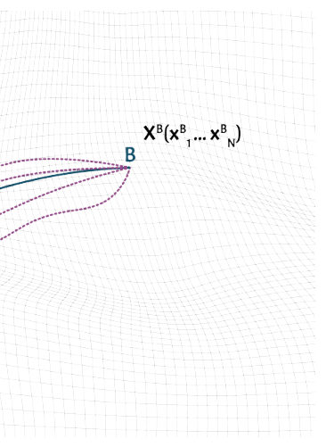
Fig 1. Figure 1.1: The system follows the minimum-action trajectory.
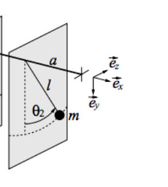
Fig 2. Figure 1.2: 2 pendulums coupled by a torsion wire
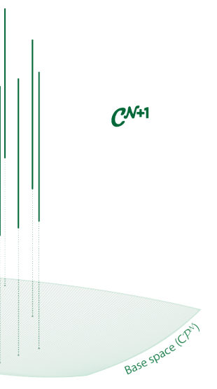
Fig 3. Figure 2.1: The Projective Space CPn as a Base of a Fiber Bundle over Cn+1
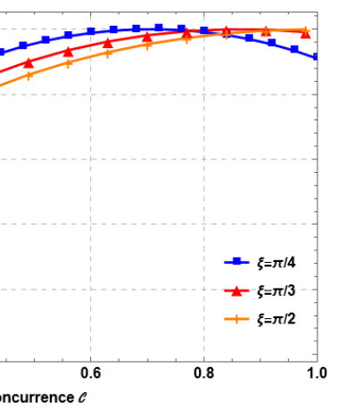
Fig 4. Figure 3.2: Evolution speed Eq. (3.72) versus the entanglement degree
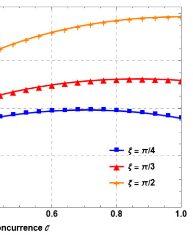
Fig 5. Figure 3.3: FubiniStudy Distance (3.73) vs. Concurrence (3.71) for various κ values
Summary. This thesis investigates how the geometry of quantum state space, characterized by metrics and curvature, relates to the dynamical evolution and entanglement of spin systems. It demonstrates that quantum correlations effectively 'compress' the state space by reducing its curvature and geometric phase. The work bridges classical symplectic mechanics with quantum information geometry.
Why it may be interesting. It provides a unified geometric framework for understanding how entanglement modifies the topology and curvature of state space, which is fundamental for developing robust geometric quantum gates and understanding many-body dynamics.
Detailed structure
**Main problem.** The research explores the interplay between the geometric/topological properties of quantum state space and the dynamical evolution of spin systems, specifically regarding entanglement and evolution speed.
**Main result.** The study establishes that increasing entanglement decreases the curvature of the state space and reduces the accumulated geometric phase, with higher spin values enhancing these variations.
**Method.** The author utilizes the mathematical framework of projective Hilbert space, applying the Fubini-Study metric, symplectic geometry, and the Gauss-Bonnet theorem to analyze quantum states.
**Model / system.** The study focuses on spin systems, including two-body anisotropic Heisenberg (XXZ) models and many-body all-range Ising models for both spin-1/2 and general spin-s particles.
**Key observables.** Quantum entanglement (concurrence, I-concurrence), geometric phase (Berry, Aharonov-Anandan), evolution speed, and G-curvature.
**Important parameters / regimes.** Interaction anisotropy, coupling intensity, spin value (s), number of particles (N), and the thermodynamic/large-spin limits.
**Assumptions / limitations.** The analysis is primarily restricted to unitary evolution in closed quantum systems.
**Figures summary.** Plots illustrating the relationship between evolution speed, entanglement, and Fubini-Study distance, as well as curvature and geometric phase as functions of I-concurrence.
**Paper structure.** The thesis progresses from classical Hamiltonian mechanics and symplectic structures to the geometric description of quantum states, concluding with the application of these tools to analyze the dynamics and topology of Heisenberg and Ising spin models.
Abstract
This thesis, explores the quantum entanglement and evolution through both a geometric and dynamical perspective. The first part focuses on classical phase space and its central role in Hamiltonian mechanics, emphasizing the importance of symplectic structures in describing mechanical states. The study highlights the formal analogy between classical phase space and the Hilbert space used in quantum mechanics. The second part is devoted to the geometric description of quantum states through the projective structure of Hilbert space. Emphasis is placed on the geometric interpretation of quantum evolution, particularly via the Fubini-Study metric, associated symplectic structures, and the geometric phase acquired during unitary evolutions. The final two parts are dedicated to the study of spin systems (both two-body and many-body) under different interaction models (XXZ Heisenberg and all-range Ising). Both the dynamical aspects (evolution speed, entanglement, and the quantum brachistochrone problem) and the geometric and topological structures of the corresponding quantum states are analyzed.
Authors: Koray Mentesoglu, Rahul Trivedi, Sara Mouradian Type: theory · Category: quantum information and computing · PDF:https://arxiv.org/pdf/2605.00287v1 Analysis basis: full PDF text, analyzed in chunks
Topic relevance: 🔥 quantum measurements4/5 · methods for driven-dissipative2/5
↔ Scroll figures horizontally
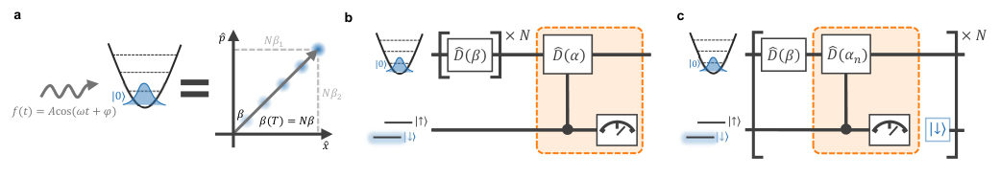
Fig 1. FIG. 1. a A QHO feels a force f(t), which manifests as a displacement in phase space. A single interrogation time consists of N signal interactions. b Single Measurement Protocol: Phase is accumulated in the QHO to gain a factor of N advantage in precision. The signal displacement ˆD(β) is followed by an ancilla-assisted measurement (orange box) which includes a state-dependent coupling displacement and projective measurement on the qubit. c Sequential Measurement Protocol: The sequential-measurement protocol repeats the coupling and measurement operations at every round. The qubit is reset into the ground state, |↓⟩, before the next round, but QHO evolution continues.
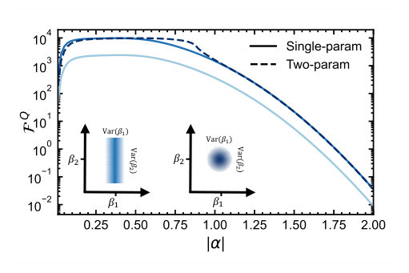
Fig 2. FIG. 3. QFI comparison at N = 100 and |α| = 0.2. In light blue, single-parameter estimation using N measurements. In blue, single-parameter estimation using 2N measurements. In dashed dark blue, two-parameter estimation using 2N mea- surements plotting only FQ 11. The single-parameter curves share a similar shape, while the two-parameter curve in- cludes an increased range of optimal |α|. Inset: Though 2N measurements for both protocols yield comparable informa- tion gain for FQ 11, the plotted two-parameter protocol also has information about the other parameter FQ 22, whereas the single-parameter protocol only gives information about a sin- gle quadrature.
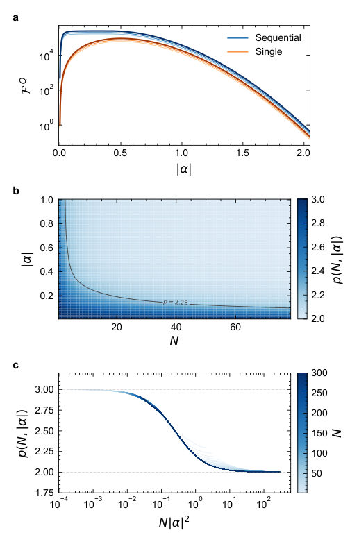
Fig 3. FIG. 2. a QFI vs. |α| for N ∈{410, 450, 500} for the single- (orange) and sequential- (blue) measurement protocols. The sequential-measurement protocol exhibits larger information gain and a wider range of optimal |α|. Increasing N will in- crease the overall FQ gain. b Heat map of scaling exponent, p = d log FQ/d log N, for different measurement strengths and N. An example contour, p = 2.25, is plotted. c Scal- ing exponent p plotted as a function of N|α|2 for increasing N. The weak and strong measurement regimes are defined by N|α|2 ≪1 and N|α|2 ≫1.
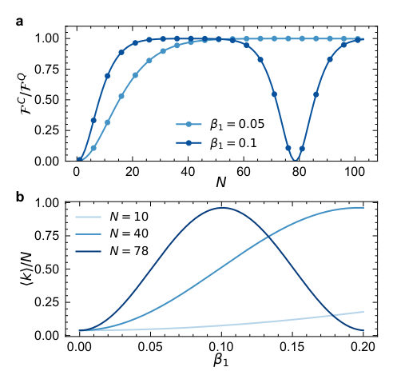
Fig 4. FIG. 4. Using |α| = 0.2 a FC/FQ is plotted as a function of signal interactions, N, for performing single-parameter es- timation of two different signals: β1 = 0.05 and β1 = 0.1. The CFI saturates the QFI. Larger β1 exhibits dips in infor- mation gain. b Average excitation number ⟨k⟩= P
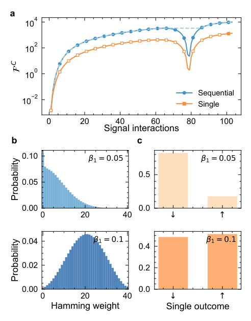
Fig 5. FIG. 5. Using |α| = 0.2 a The CFI for β1 = 0.1 for the sequential- (blue) and single- (orange) measurement proto- cols. The sequential measurements present a fundamentally different method for information gain, allowing signal infor- mation to be recovered, while avoiding interference dips (dot- ted line). b Sequential- and c single-measurement protocol outcome probability distributions for N = 40 at two signal strengths. At β1 = 0.05 (top row), both protocols produce distributions skewed towards the ground states. At β1 = 0.1 (bottom row), the distributions become symmetric, corre- sponding to the maximum-slope point in Fig.4(b), where sen- sitivity to β1 is greatest.
Summary. This paper proposes a protocol using sequential weak measurements to simultaneously estimate both quadratures of a quantum displacement. It demonstrates that this approach can achieve enhanced scaling of information, increase dynamic range, and remain robust against environmental decoherence.
Why it may be interesting. It provides a novel way to use measurement backaction as a resource and demonstrates how sequentiality can fundamentally change the scaling of precision and robustness to noise in open quantum systems.
Detailed structure
**Main problem.** Developing a quantum metrology protocol for the simultaneous estimation of both quadratures of a displacement channel while overcoming limitations like decoherence and phase wrapping.
**Main result.** Sequential weak measurements act as a resource that can increase information gain via measurement backaction, achieve N^3 scaling of Quantum Fisher Information in certain regimes, and provide robustness to decoherence.
**Method.** The authors use a sequential measurement protocol on an ancilla qubit coupled to a harmonic oscillator, employing a Dicke basis to reduce computational complexity and analyzing information via Quantum and Classical Fisher Information.
**Model / system.** A Quantum Harmonic Oscillator (QHO) coupled to an ancilla qubit, subject to a displacement channel and subject to environmental decoherence (loss and dephasing) modeled by a Lindblad master equation.
**Key observables.** Measurement outcomes of the ancilla qubit (N-bit string), Hamming weights, and Quantum/Classical Fisher Information.
**Important parameters / regimes.** Displacement parameters (beta_1, beta_2), measurement strength (alpha), number of measurement rounds (N), and effective decay rate (Gamma).
**Assumptions / limitations.** The thermal occupancy of the oscillator is assumed to be negligible (n_th approx 0), and the protocol assumes the QHO cannot be measured directly.
**Figures summary.** Fig 1 illustrates the single vs. sequential measurement protocols; Fig 2 shows QFI superiority and scaling exponents; Fig 3 compares single vs. two-parameter performance; Fig 4 shows CFI dips; Fig 7 shows the monotonic decrease of CRB in the presence of decoherence; Fig 8 compares joint-system QFI.
**Paper structure.** The paper introduces the sequential protocol, establishes the mathematical framework using the Dicke basis, compares scaling regimes (weak vs. strong measurement), extends the protocol to two-parameter estimation, analyzes robustness against decoherence, and discusses connections to grid states.
Abstract
We present a protocol in which sequential weak measurements of a quantum harmonic oscillator enable simultaneous estimation of both quadratures of a displacement channel. Calculations of the quantum Fisher information show that the measurement backaction can increase the information gained for a range of measurement strengths. The protocol distributes information over a $N$-bit string after $N$ weak measurements. Thus we find that post-processing can be used to avoid information loss due to phase wrapping, increasing the effective dynamic range. Finally, the periodic information extraction makes the protocol robust to decoherence. Our results establish mid-sensing measurement as a resource for single- and multi-parameter quantum metrology.
Authors: Yanzhang Zhu, Zhe Wang, Meng Cheng, Zheng Yan Type: theory · Category: statistical mechanics · PDF:https://arxiv.org/pdf/2605.00104v1 Analysis basis: full PDF text, analyzed in chunks
Topic relevance: 🔥 entanglement & information structure4/5
↔ Scroll figures horizontally
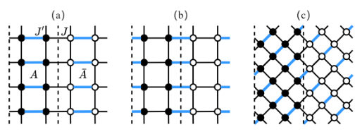
Fig 1. FIG. 1. Schematic illustration of the columnar dimerized Heisenberg model and entanglement bipartitions. Thick blue bonds represent the strong couplings J′, and thin black bonds denote the weak couplings J. The dashed line indicates the entanglement bipartition, which separates the system into subsystem A (in black) and its environment ¯A (in white). Panels (a) and (b) correspond to ordinary and special cuts, while panel (c) corresponds to the extraordinary cut realized by a tilted cut in the same model. These three cuts are used throughout the paper to realize the three classes of Rényi de- fects compared below.
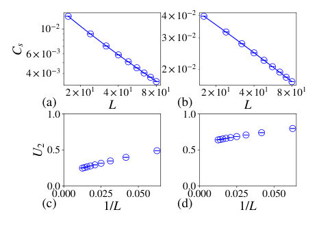
Fig 2. FIG. 2. Finite-size scaling of observables for ordinary and spe- cial Rényi defects at n = 2 in the columnar dimerized Heisen- berg model. Left panels: ordinary; right panels: special. Top row shows the spin correlation Cs(L) on the Rényi line defects, and bottom row shows the Binder cumulant U2(L). System sizes range from L = 16 to 80. Solid lines are fits described in the text.
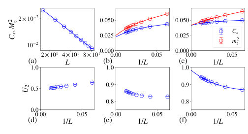
Fig 3. FIG. 3. Finite-size scaling of observables for the extraordinary Rényi defect at different Rényi indices. Columns (left to right) correspond to n = 2, n = 4, and n = 10. Top row shows the spin correlation Cs(L) on the Rényi defect line, and bottom row shows the Binder cumulant U2(L). For n = 4 and n = 10, we additionally show the squared magnetization M 2 z . System sizes range from L = 16 to 80. Solid lines are fits described in the text.
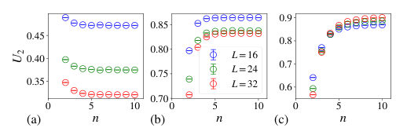
Fig 4. FIG. 4. Binder cumulant U2 as a function of Rényi index n for (a) ordinary, (b) special, and (c) extraordinary Rényi defects in the columnar dimerized Heisenberg model. Differ- ent symbols correspond to system sizes L = 16, 24, 32. For the ordinary and special cuts, U2 evolves smoothly with n and no crossing is observed, consistent with the absence of a finite-n phase transition. In contrast, for the extraordinary cut the Binder cumulant curves cross near nc ≈3–4, indicat- ing a transition between a disordered regime at small n and an ordered regime at larger n.
Summary. This paper demonstrates that the universality of Renyi entanglement entropy is determined by the specific geometry of the entanglement cut, which can lead to different defect universality classes. It identifies a phase transition on the 'extraordinary' defect line driven by the Renyi index. This provides a framework to understand why entanglement scaling can appear sensitive to microscopic lattice details.
Why it may be interesting. not directly relevant
Detailed structure
**Main problem.** The study investigates why the universal scaling of Renyi entanglement entropy depends on the microscopic details of the entanglement cut and explores the universality classes of codimension-two Renyi defects at (2+1)d O(3) quantum critical points.
**Main result.** The authors find that different entanglement cuts realize distinct Renyi defect universality classes (ordinary, special, and extraordinary) and provide evidence for a phase transition on the extraordinary defect as a function of the Renyi index n.
**Method.** Large-scale quantum Monte Carlo simulations on n-sheeted replica manifolds are used to measure local observables and extract scaling dimensions via finite-size scaling analysis.
**Model / system.** The study uses (2+1)d quantum spin models at the O(3) Wilson-Fisher quantum critical point, specifically the 1/2 columnar dimerized Heisenberg model and the spin-1/2 bilayer Heisenberg model.
**Key observables.** Renyi-n expectation values, defect spin-spin correlation functions, and the defect Binder cumulant.
**Important parameters / regimes.** Renyi index n, system size L, and the coupling ratio J'/J used to reach the critical point.
**Assumptions / limitations.** Numerical access is restricted to positive integer n > 1 via the replica approach; the behavior of the special defect remains somewhat inconclusive due to subtle numerical signals.
**Figures summary.** Figure 1 shows schematic entanglement cuts (ordinary, special, extraordinary); Figure 2 shows finite-size scaling for ordinary/special cuts; Figure 3 shows scaling for the extraordinary defect; Figure 4 shows the Binder cumulant crossing for the extraordinary cut.
**Paper structure.** The paper introduces the problem of entanglement cut sensitivity, describes the quantum spin models and replica QMC method, presents results for different defect types (ordinary, special, extraordinary), discusses the phase transition in the extraordinary case, and concludes with implications for entanglement entropy scaling.
Abstract
At a quantum critical point, the universal scaling behavior of Rényi entanglement entropy is controlled by the universality class of the codimension-two Rényi (or conical) defects in the infrared theory. In this work we perform a systematic study of critical correlations along Rényi defect lines in (2+1)d quantum spin models realizing quantum phase transitions described by the O(3) Wilson-Fisher universality class, using large-scale quantum Monte Carlo simulations. We present numerical evidence that, for a fixed Rényi index $n$, there exist multiple Rényi defect universality classes, with distinct critical exponents for the O(3) order parameter on the defect. These universality classes are realized by choosing microscopically different entanglement cuts in lattice models, which we classify as ordinary, special and extraordinary according to their relation to surface criticality. For the extraordinary entanglement cut, we further find evidence for a phase transition on the defect as a function of the Rényi index. Our results highlight the key role of defect universality classes in determining the universal scaling of Rényi entropy, and provide a framework for understanding the previously observed dependence of Rényi entropy scaling on microscopic lattice details.
Authors: Katsuhiko Inagaki, Satoshi Tanda Type: theory · Category: strongly correlated electrons · PDF:https://arxiv.org/pdf/2605.00521v1 Analysis basis: full PDF text, analyzed in chunks
Topic relevance: 🔥 Frenkel-Kontorova4/5
↔ Scroll figures horizontally
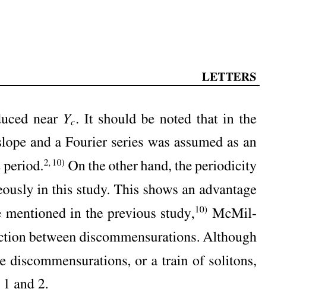
Fig 1. Figure 3 shows the wave profiles at Y = 1.234, slightly higher than Yc. To include dis-
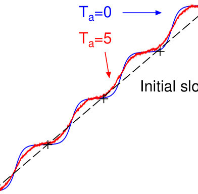
Fig 2. Fig. 1. Optimization of the wave form from a pure incommensurate CDW. The black solid line represents the
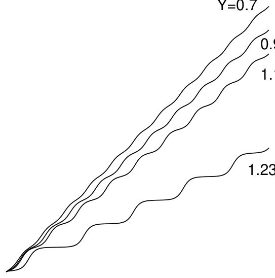
Fig 3. Fig. 2. Evolution of wave profiles. The parameter Y = 0.6, 0.9, 1.1, and 1.233 from top to bottom. Discom-
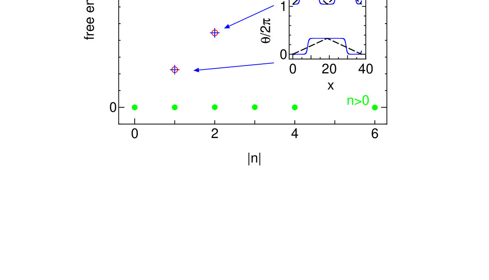
Fig 4. Fig. 4. Free energies for discommensurations for n > 0 (open circles) and n < 0. By increasing the number
Summary. This paper uses simulated annealing to study the lock-in transition in charge-density waves. It finds that discommensurations are topologically protected and can drive a commensurate system into an incommensurate state, providing a theoretical basis for observed current-induced incommensuration in materials like o-TaS3.
Why it may be interesting. not directly relevant
Detailed structure
**Main problem.** Understanding the mechanism behind the emergence of discommensurations during the lock-in transition of charge-density waves (CDWs) and explaining current-induced incommensuration.
**Main result.** The study demonstrates that discommensurations are topologically protected and can be excited in the commensurate state, driving the system toward an incommensurate state, which is consistent with experimental observations in o-TaS3.
**Method.** Numerical optimization using simulated annealing based on the Metropolis algorithm to minimize the McMillan free energy functional.
**Model / system.** The model uses McMillan's free energy functional for charge-density waves in quasi-one-dimensional conductors like o-TaS3 and K0.3MoO3.
**Key observables.** CDW intensity, wave profiles, phase jumps, and free energy relative to the commensurate state.
**Important parameters / regimes.** The parameter Y (representing the third-order Umklapp process), the critical value Yc, and the phase theta.
**Assumptions / limitations.** The model assumes a second-order transition via the McMillan free energy, though the authors note that the Umklapp term might induce a first-order transition.
**Figures summary.** Figure 1 shows the evolution of wave profiles during annealing; Figure 2 shows wave profiles for various Y values; Figure 3 shows profiles for different initial slopes; Figure 4 compares free energies of discommensurations and soliton-antisoliton pairs.
**Paper structure.** The paper begins with a validation of the numerical method, followed by an analysis of wave profiles near the critical value, an investigation of discommensurations in the commensurate state, a discussion of topological protection and energy asymmetry, and finally a comparison with experimental results.
Abstract
We studied McMillan's free energy of the lock-in transition in charge-density waves. The wave profiles near the critical value were obtained by numerical annealing. First, we demonstrated that our method reproduces the previous studies. The obtained wave profiles include discommensurations near the critical value. Then, we calculated possible wave profiles in the commensurate state. We found that discommensurations are able to be excited in the commensurate state, leading the system to turn out to an incommensurate state. We proposed that these wave profiles result from topological invariants. Moreover, excitation of the discommensurations is favorable for the direction to the original wavelength of the incommensurate state. This is attributed to the nature of McMillan's free energy. The current-induced incommensurations, which we discovered with the diffraction study of $o$-TaS$_3$ [Inagaki \textit{et al.}, J. Phys. Soc. Jpn. 77, 093708 (2008)], is consistent with this study.
Authors: Yi-Hua Lai, John P. T. Stenger, Gloria Bazargan, Igor V. Schweigert, Daniel Gunlycke Type: both · Category: quantum information and computing · PDF:https://arxiv.org/pdf/2605.00807v1 Analysis basis: full PDF text, analyzed in chunks
Topic relevance: 🔥 QC/QI experiment4/5
↔ Scroll figures horizontally
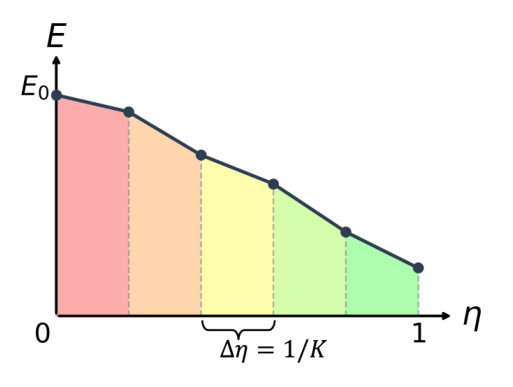
Fig 1. FIG. 1. A schematic diagram of the energy E(t) of the state evolving from the model ground state |Φ0⟩to the trapezoidal state ˆUK,Ω|Φ0⟩as a function of the discretized parameter ηk with K = 5 steps of size ∆η = 1/K.
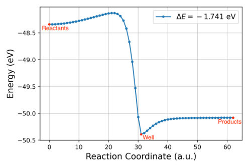
Fig 2. FIG. 2. Electronic energies along the minimal-energy path for reaction (1) computed by the NEB method using CCSD/def2- QZVP. Energies corresponding to the reactant, collision, and product complexes are highlighted in red at coordinate 0, 31, and 62, respectively.Fig 3. Figure 4 presents the ground-state energies obtained by the CVQE method using Qiskit [38]’s noiseless simu- lator as the blue solid curve, which is close to the orange dashed curve obtained by classical FCI. Both sets of CVQE and FCI calculations use the STO-6G basis set and the correction Ebsc in Eq. (12). For comparison, HF energies with the larger basis set def2-QZVP are shown as the green dashed curve. Both the CVQE and FCI calculations yield the same reaction energy, ∆E = −1.804 eV.
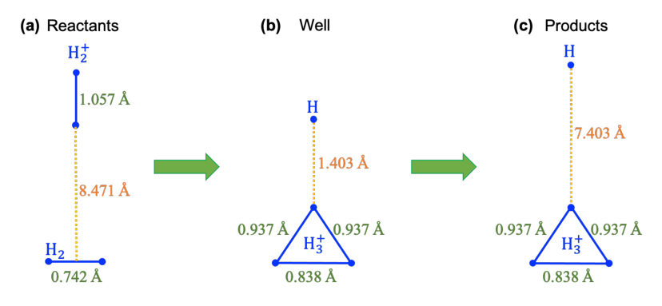
Fig 4. FIG. 3. Representative molecular structures along the minimal-energy path for reaction (1). Hydrogen atoms are shown in blue and interatomic distances are shown in green and orange. Shown are the geometries of the (a) reactants — H2 + and H2 are separated, (b) well — the system is at the lowest energy during the reaction, and (c) products — H3 + and H are separated.
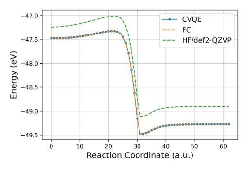
Fig 5. FIG. 4. Electronic energies along the minimum-energy path for reaction (1) with the reactant, well, and product states at coordinate 0, 31, and 62, respectively. The reactant-product energy differences are ∆E = −1.804 eV for CVQE and FCI, and ∆E = −1.659 eV for HF/def2-QZVP.
Summary. This paper investigates the Cascaded Variational Quantum Eigensolver (CVQE), an algorithm designed to reduce communication between quantum and classical units. By analyzing probability distributions, the authors show how to optimize guiding-state parameters to maintain chemical accuracy and maximize signal-to-noise ratios on noisy quantum hardware.
Why it may be interesting. It provides practical insights into error mitigation and parameter tuning for VQE-like algorithms on NISQ devices, specifically showing how to balance adiabaticity and noise susceptibility.
Detailed structure
**Main problem.** Optimizing the selection of guiding states in the Cascaded Variational Quantum Eigensolver (CVQE) to achieve accurate many-electron ground-state solutions with minimal resource consumption and robustness against hardware noise.
**Main result.** The study demonstrates that CVQE can achieve chemical accuracy even with single-step adiabatic preparation and that tuning the adiabatic energy scale (h-Omega) can maximize the signal-to-noise ratio on real NISQ hardware.
**Method.** The authors use a trapezoidal-state preparation method for the CVQE algorithm, comparing noiseless simulations with IBM quantum hardware (ibm_aachen) and utilizing classical benchmarks like CCSD and FCI.
**Model / system.** A prototypical bimolecular reaction (H2 + H2+ -> H3+ + H) modeled using a many-electron Hamiltonian and a 256-dimensional Fock space, mapped to 8 qubits via the Jordan-Wigner transformation.
**Key observables.** Ground-state energies (Eg), reaction energies (Delta E), and probability distributions of the quantum state at various algorithm stages.
**Important parameters / regimes.** Discretization steps (K), adiabatic energy scale (h-Omega), sampling scale (shot counts), and the adiabaticity condition (h-Omega K^-1 << h-omega_0 << h-Omega).
**Assumptions / limitations.** The use of a minimal STO-6G basis set and the assumption that the classical optimization can compensate for distortions in the guiding state if the sampled Fock state set is representative.
**Figures summary.** Figure 1 shows energy evolution via discretization; Figure 2 plots the minimal-energy path; Figure 3 shows molecular structures; Figure 8 shows noiseless probability distributions; Figure 9 and 10 illustrate how the guiding-state distribution and sampling counts change with the adiabatic energy scale on real hardware.
**Paper structure.** The paper introduces the CVQE algorithm, defines the trapezoidal-state preparation method, analyzes different parameter regimes (adiabaticity and sampling) on simulators, evaluates performance on real IBM hardware, and provides a symmetry-based justification for the Fock state distributions in the appendix.
Abstract
The cascaded variational quantum eigensolver (CVQE) circumvents the need for iterative communication between the quantum and classical processing units that is necessary in the conventional VQE algorithm. While CVQE offers complete freedom to choose the guiding state as input, not all guiding states suffice for solution accuracy, as well as resource efficiency. Our work presents a process based on trapezoidal-state preparation for selecting guiding states that yield accurate many-electron ground-state solutions with minimal resource consumption. By analyzing the state probability distributions at different stages of the CVQE calculations, we determine the optimal guiding-state parameters for given resource constraints. We demonstrate the process by comparing electronic energies along the minimal-energy path for a prototypical bimolecular reaction, $\mathrm{H}_2 + \mathrm{H}_2^+ \rightarrow \mathrm{H}_3^+ + \mathrm{H}$, using Noisy Intermediate-Scale Quantum (NISQ) computing.
Authors: Andrew Woods, Chi-Ren Shyu Type: both · Category: quantum information and computing · PDF:https://arxiv.org/pdf/2605.00118v1 Analysis basis: full PDF text, analyzed in chunks
Topic relevance: 🔥 QC/QI experiment4/5
↔ Scroll figures horizontally
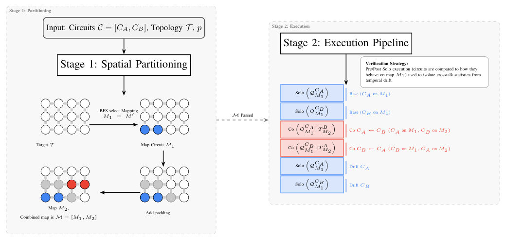
Fig 1. Fig. 1: Visual overview of the experimental methodology. Stage 1 executes spatial partitioning and padding to generate the mapping set M. Stage 2 utilizes a verification pipeline (Solo vs Cotenant) to isolate crosstalk from temporal drift.
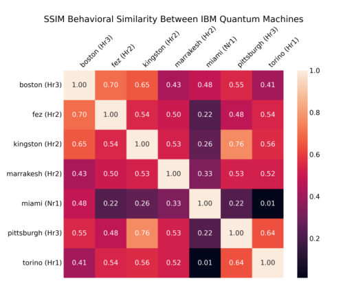
Fig 2. Fig. 4: This chart illustrates how similarly each of the ma- chines behave. A higher score means that a scheduler cali- brated for one machine can be deployed for another machine. The sequence of lower scores for ibm_miami (Nighthawk r1) indicates a recalibration for complete revisions of new circuits will be needed.
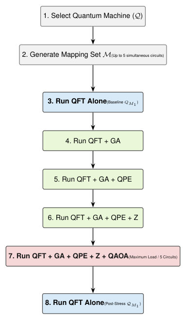
Fig 3. Fig. 2: Flow of adding more and more stress on QFT circuit multitenancy with the strong to weak interference circuits. The weak to strong interference add the circuits in reverse order starting with adding QAOA and ending with adding GA.
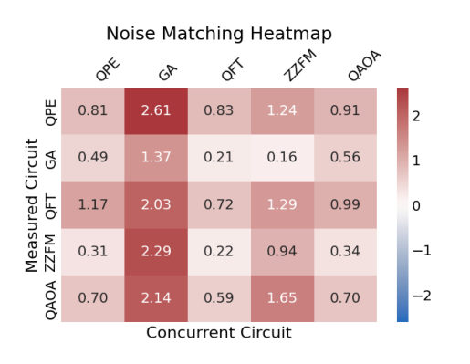
Fig 4. Fig. 3: Overall interaction scores between circuits across all machines. All noise levels have been shifted so that the stan- dalone baseline is 0. The columns show an uneven structure indicating that circuits are not simply ”noisy” but convey a complex relationship.
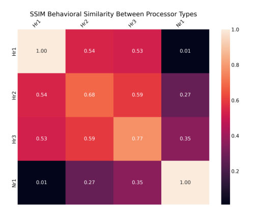
Fig 5. Fig. 5: A higher level overview of circuit types. These values are averaged amount the SSIM scores between each processor type. We see that there is a noticeable drop in the score between the Nighthawk r1 and Heron r1 processors where the score is approximately 0, indicating a need for a complete scheduler recalibration across generations. However, only a slight recalibration would be needed for processors of the same type.
Summary. This paper investigates how running multiple quantum circuits simultaneously on the same hardware causes crosstalk that can degrade performance and compromise security. By characterizing which circuits are 'aggressive' or 'sensitive,' the authors propose a framework for a scheduler to pair compatible jobs to maximize system utility and stability.
Why it may be interesting. not directly relevant
Detailed structure
**Main problem.** The study addresses the security and performance risks introduced by inter-circuit crosstalk during multitenant execution in cloud-based quantum computing, specifically focusing on how concurrent jobs can lead to fault-injection or information leakage.
**Main result.** The authors identify three classes of circuits (universally aggressive, universally sensitive, and cotenant-dependent) and demonstrate that while crosstalk patterns are transferable within hardware revisions, they are fundamentally different across different topologies like Heavy-Hex and Square lattices.
**Method.** The researchers used a 'Sandwiched Baseline-Cotenant Calibration' strategy to isolate crosstalk from temporal drift and applied the Structural Similarity Index (SSIM) to quantify the consistency of interference patterns across seven IBM superconducting processors.
**Model / system.** The experimental platform consists of seven IBM superconducting quantum processors, including various generations of the Heron (Heavy-Hex lattice) and Nighthawk (Square lattice) architectures.
**Key observables.** Crosstalk Aggression (N), Crosstalk Sensitivity (S), Structural Similarity Index (SSIM), t-statistic of interference, and Bhattacharyya Coefficient for fidelity.
**Important parameters / regimes.** Padding depth (p) for spatial isolation, circuit depth, 2-qubit gate ratio, and architectural topology (Heavy-Hex vs. Square).
**Assumptions / limitations.** The study uses a pairwise approximation for circuit interactions, which may not fully capture the complexity of much higher-load multitenant scenarios.
**Figures summary.** Figure 1 shows the experimental methodology and mapping flow; Figure 2 illustrates cumulative stress-tests with increasing circuit load; Figure 3 displays interaction scores across different machines; Figure 4 and 5 show SSIM scores indicating hardware transferability and architectural differences.
**Paper structure.** The paper introduces the problem of multitenancy security, describes the hardware and circuit selection, details the experimental protocols for isolation and mapping, presents the classification of circuits and architectural similarity results, and concludes with implications for hardware-aware scheduling.
Abstract
Multitenancy increases throughput and reduces costs in cloud-based quantum computing, but concurrent job execution introduces security risks through inter-circuit crosstalk. We characterize the structural predictability of these interference patterns across seven IBM superconducting processors, spanning Heron (r1-r3) and Nighthawk (r1) architectures and five different circuit types. We evaluate pairwise interactions, by applying the Structural Similarity Index (SSIM) and a structural $t$-statistic to the concurrent execution of five foundational quantum circuits (QAOA, Grover's, QPE, QFT, and ZZFeatureMap), we quantify behavioral consistency across disparate hardware. Our results identify three types of circuits: universally aggressive, universally sensitive, and cotenant-dependent circuits. Aggressive circuits, such as Grover's Algorithm, exhibit a statistically significant interference pattern, yielding a $t$-statistic range of $[1.37,2.61]$ relative to the standalone baselines across all tested pairings. Conversely, sensitive circuits, such as the Quantum Fourier Transform, demonstrate a disproportionate susceptibility to multitenant execution, showing high deviations from single-tenant computational behavior. We demonstrate that crosstalk signatures are highly consistent within architectural revisions--with intra-revision similarity reaching $0.77$ (Hr3) and $0.68$ (Hr2)--while inter-revision similarity drops to $0.43$. Furthermore, we identify a ``topological decoupling" between Heavy-Hex and square lattice systems, where structural similarity falls to $0.01$ between Heron r1 and Nighthawk r1. These findings provide an empirical foundation for hardware-aware schedulers to strategically pair jobs, maximizing system utilization while preserving computational integrity.
Authors: Renfei Zheng, Junying Wu, Josep Cabedo, Alessio Celi, Zhihao Lan, Weiping Zhang, Lu Zhou Type: theory · Category: quantum gases · PDF:https://arxiv.org/pdf/2605.00596v1 Analysis basis: full PDF text, analyzed in chunks
Topic relevance:Keldysh / 2PI / non-Gaussian methods3/5 · driven-dissipative phase transition3/5 · non-equilibrium dynamics3/5 · quantum measurements3/5 · analog quantum simulation2/5 · entanglement & information structure2/5 · exotic spin models in light-matter2/5
↔ Scroll figures horizontally
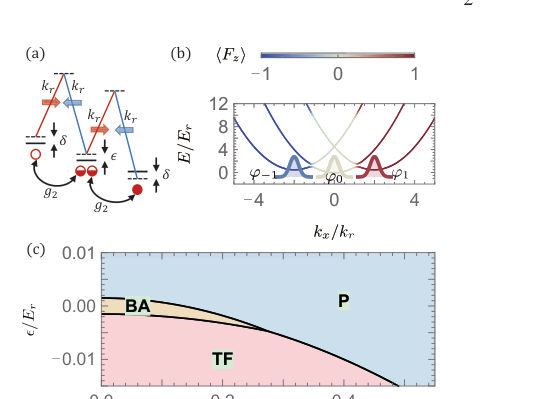
Fig 1. FIG. 1. Effective spinor description of a Raman-dressed spin-1 BEC. (a) Raman coupling scheme within the F = 1 manifold. The Raman lasers couple adjacent Zeeman states while transferring mo- mentum 2ℏkr. The diagram also indicates the spin-changing colli- sion process, proportional to g2, in which two atoms in the m = 0 state are converted into a correlated pair in the m = ±1 states, and vice versa. The linear and quadratic detunings from Raman reso- nance are denoted by δ and ϵ, respectively. (b) Dispersion bands of Hamiltonian (1) for Ω= 0.5Er, δ = 0, and ϵ = 0.5Er. The color scale indicates the expectation value of Fz for the correspond- ing band states. In the weak Raman coupling...
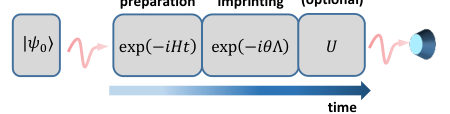
Fig 2. FIG. 2. Schematic illustration of the sequential interferometric pro- tocol.
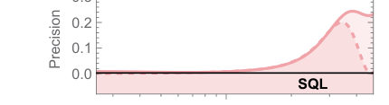
Fig 3. FIG. 3. Criticality-enhanced quantum sensing in the interferomet- ric protocol. (a) Excited-state phase diagram of the effective spinor Hamiltonian (2) for N = 100 atoms at zero magnetization, shown as a function of the scaled energy E and the effective quadratic Zee- man parameter ˜ϵ. The color scale represents the normalized number variance ∆N0/N of the dressed mode φ0 for the eigenstates. The green dashed lines indicate the ESQPT lines. (b),(c) Estimation pre- cision and quantum Fisher information for initial states prepared near the ground-state quantum phase transition (blue square in (a), panel (b)) and near an ESQPT (red square in (a), panel (c)), for N = 100 atoms. The dashed lines...
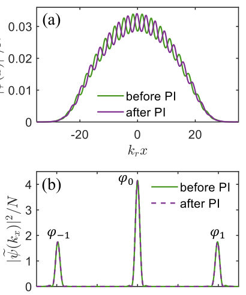
Fig 4. FIG. 4. Extraction of the imprinted phase from SOC-induced den- sity modulations. (a) Condensate density profiles and (b) correspond- ing quasimomentum distributions before and after phase imprinting (PI). Phase imprinting generated by Lz induces a relative phase be- tween the dressed modes, resulting in a shift of the density modu- lation pattern. Parameters for the Gross–Pitaevskii simulations are specified in Appendix B.
Summary. This paper proposes a new type of atomic interferometry using spin-orbit-coupled spin-1 Bose gases. By tuning the Raman coupling, researchers can independently control spin interactions to create entanglement and use spatial density patterns as a new way to read out phase information. This approach allows for precision measurements that can surpass the standard quantum limit.
Why it may be interesting. It presents a highly controllable platform for nonlinear atom interferometry, offering a unique way to implement time-reversal (echo) protocols and exploit spin-momentum locking for new types of quantum-enhanced sensing.
Detailed structure
**Main problem.** Developing a flexible quantum interferometry scheme that overcomes the limitations of conventional spinor BECs, specifically the difficulty in independently controlling spin-mixing interactions and measurement strategies.
**Main result.** The authors demonstrate that Raman-dressed spin-1 gases allow for enhanced metrological sensitivity beyond the standard quantum limit using both ground-state and excited-state quantum phase transitions, and provide a novel readout via spatial density modulations.
**Method.** The study uses a three-mode truncation of the effective Hamiltonian, exact diagonalization, the Truncated Wigner Approximation (TWA) for quantum dynamics, and Gross-Pitaevskii Equation (GPE) simulations.
**Model / system.** A Raman-dressed spin-1 Bose-Einstein condensate with synthetic spin-orbit coupling, described by an effective spinor Hamiltonian where the spin-mixing interaction strength can be tuned via Raman coupling.
**Key observables.** Quantum Fisher Information (QFI), estimation precision, magnetization, quadrupolar operator, and spatial density modulations (density stripes).
**Important parameters / regimes.** Raman coupling (Omega), linear and quadratic detuning (delta, epsilon), spin-mixing interaction strength (lambda), and the P, TF, and BA ground-state phases.
**Assumptions / limitations.** The low-energy dynamics are assumed to be localized around the three minima of the dispersion branches (three-mode truncation), and TWA accuracy is noted to be limited to short time scales.
**Figures summary.** Fig 1 shows the Raman coupling scheme, dispersion bands, and ground-state phase diagram; Fig 2 illustrates the sequential protocol; Fig 3 displays energy spectra, ESQPT lines, and QFI dynamics; Fig 4 demonstrates phase extraction via density stripe shifts.
**Paper structure.** The paper begins by introducing the Raman-dressed platform and its effective Hamiltonian, moves to describing specific interferometric protocols (sequential and echo-type), analyzes metrological enhancement via ground-state and excited-state criticality, and concludes with a novel spatial readout strategy.
Abstract
We propose and analyze a quantum interferometry scheme based on a Raman-dressed Bose gas with spin-orbit coupling. In this system, the atom-light coupling mixes spin and momentum degrees of freedom, giving rise, in the low-energy regime, to an effective spinor condensate whose spin-mixing interaction can be tuned independently of the atomic density. This controllability enables a separation between state preparation and phase imprinting, and provides a natural route to echo-type protocols based on effective time reversal. Within this framework, critical regimes of the effective spinor Hamiltonian can be used to generate entanglement and enhance interferometric sensitivity beyond the standard quantum limit. In addition, the spin-momentum locking of the dressed modes gives access to spatial density modulations that provide an alternative readout of the interferometric phase. In particular, phase information can be extracted from the displacement of spin-orbit-induced density stripes even when conventional spin observables are insensitive within the effective spinor description. Our results identify Raman-dressed spinor gases as a flexible platform for nonlinear atomic interferometry, combining controllable spin-mixing dynamics with spatially resolved phase readout.
Authors: Pedro V. Paraguassú, Luca Abrahão, Daniel Tandeitnik, D. Martínez-Tibaduiza, Antonio Zelaquett Khoury, Thiago Guerreiro Type: both · Category: other · PDF:https://arxiv.org/pdf/2605.00724v1 Analysis basis: full PDF text, analyzed in chunks
Topic relevance:interference shaping light3/5 · quantum measurements3/5 · correlated / nonlocal dissipation2/5 · entanglement & information structure2/5 · methods for driven-dissipative2/5 · non-equilibrium dynamics2/5
↔ Scroll figures horizontally
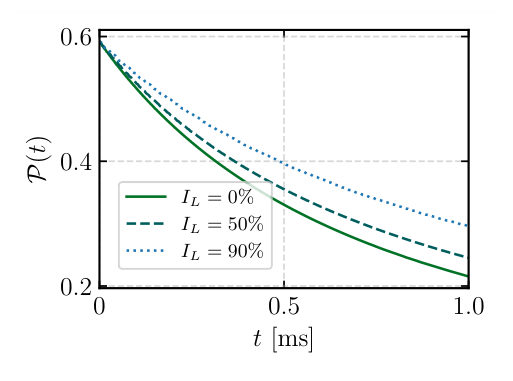
Fig 1. FIG. 1: Time evolution of the state purity, P for dif- ferent fractional powers IL of the l = ±2 modes in the saddle trap, for an initial thermal state of a Gaussian trap with occupation numbers ¯nx = ¯ny = 0.8 and initial purity P(0) ≈0.6.
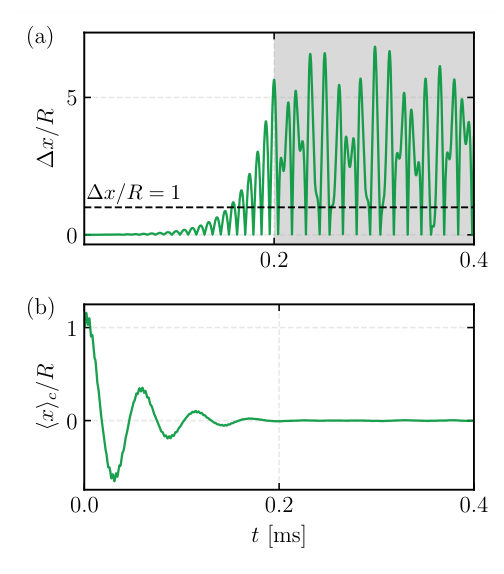
Fig 2. FIG. 2: Time evolution of (a) the position uncertainty normalized by the particle radius, ∆x/R. At t = 0, the particle is transferred into a slowly rotating saddle beam (Ω/Ω0 < 1), leading to state expansion. At t = 0.2 ms, the rotation frequency is abruptly increased to Ω/Ω0 = 4.5, truncating state expansion. (b) Time evolution of the conditional mean position ⟨x⟩/R under continuous monitoring and feedback cooling, starting from an initial displacement ⟨x⟩0 = R.
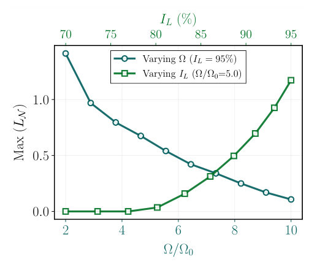
Fig 3. FIG. 3: Maximum entanglement at 1 ms, quantified by the logarithmic negativity LN , as a function of the Laguerre-Gaussian fractional power IL and the dimen- sionless rotation frequency Ω/Ω0. The lower and upper horizontal axes display the degree of rotation and the La- guerre mode fraction IL, respectively.
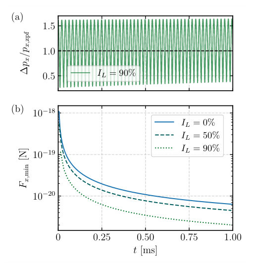
Fig 4. FIG. 4: Time evolution of (a) the momentum uncer- tainty normalized by zero-point fluctuations of the initial Gaussian trap as discussed in the main text, ∆px/pzpf, specifically for IL = 90%. The dashed line marks the zero-point fluctuation limit, where values below it in- dicate momentum squeezing. (b) Minimum detectable force Fx,min as a function of time for different Laguerre mode fractions IL. The sensitivity is derived from the quantum Cramér-Rao Bound with a stable rotation fre- quency Ω= 20 Ω0. Increasing IL enhances momentum squeezing, directly improving sensitivity and pushing the detection limit into the zepto-Newton (10−21 N) regime.
Summary. The paper proposes a new all-optical saddle trap for levitated nanoparticles using structured light to reduce decoherence. This platform allows for advanced quantum tasks such as controlled wavefunction expansion and highly sensitive force detection in the zepto-Newton range.
Why it may be interesting. It provides a novel platform for studying open quantum systems by demonstrating how structured light can be engineered to suppress specific decoherence channels like photon recoil.
Detailed structure
**Main problem.** The need for levitated optomechanical platforms that minimize decoherence from photon recoil and thermal radiation while enabling controlled quantum experiments like delocalization and force sensing.
**Main result.** An all-optical rotating saddle trap using structured light (Gaussian and Laguerre-Gauss modes) suppresses photon recoil decoherence and enables force detection sensitivity in the zepto-Newton regime.
**Method.** The study uses a master equation approach to model decoherence and a Quantum Fisher Information Matrix analysis to derive fundamental limits for force metrology.
**Model / system.** A mesoscopic, levitated nanoparticle (radius 50 nm) in a rotating, time-dependent quadratic potential created by a superposition of Gaussian and Laguerre-Gauss optical modes.
**Key observables.** State purity, logarithmic negativity (entanglement), momentum squeezing, and minimum detectable force.
**Important parameters / regimes.** LG mode intensity fraction (IL), rotation frequency (Omega), gas-limited coherence time (Tgas), and numerical aperture (NA).
**Assumptions / limitations.** The system is treated within the dipole limit and quadratic approximation, assuming the particle motion remains within a characteristic length scale L.
**Figures summary.** Figure 1 shows purity evolution; Figure 2 illustrates particle delocalization and recovery protocols; Figure 3 plots entanglement vs. rotation frequency; Supplemental Figure S1 details trap stability and depth.
**Paper structure.** The paper introduces the saddle trap architecture, analyzes the stability and validity of the quadratic approximation, quantifies decoherence suppression and entanglement generation, and concludes with a metrological application for force detection.
Abstract
We investigate the quantum dynamics of a levitated nanoparticle in a structured light rotating saddle-like optical potential consisting of a superposition of Gaussian and Laguerre-Gauss modes with detuned frequencies. This rotating saddle trap offers unique opportunities for quantum experiments, such as reduced decoherence due to photon recoil and absorption, the possibility of large delocalization of the particle's center-of-mass motion, particle recovery protocols, the generation of motional entanglement and momentum squeezing. As an application, we show that this saddle-trap architecture enables force detection with sensitivity in the zepto-Newton regime.
Authors: Kejun Liu Type: theory · Category: other · PDF:https://arxiv.org/pdf/2605.00117v1 Analysis basis: full PDF text, analyzed in chunks
Topic relevance:driven-dissipative phase transition3/5 · correlated / nonlocal dissipation2/5 · methods for driven-dissipative2/5 · non-equilibrium dynamics2/5 · non-equilibrium universality2/5
↔ Scroll figures horizontally
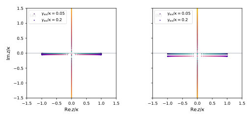
Fig 1. FIG. 1. Pole trajectory of the PT-dimer reflection coefficient in the complex z-plane as γ/κ sweeps across [0, 2], for two values of γex/κ. (a) Single-port coupling. (b) Symmetric coupling. A single pole crosses from the LHP into H+ at the EP.
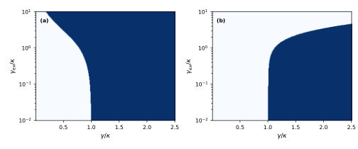
Fig 2. FIG. 2. Phase diagram in the (γ/κ, γex/κ) plane. (a) Single- port: causal (NB = 0, white) vs acausal (NB = 1, blue). (b) Symmetric: three regions including an overdamped re- entrant causal phase.
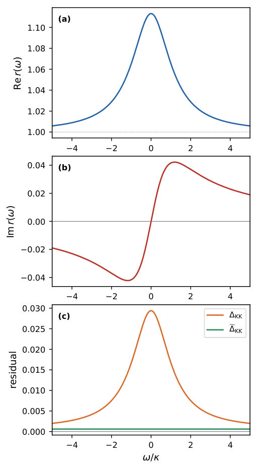
Fig 3. FIG. 3. KK residual at (γ, γex) = (1.5, 0.1)κ. (a) Re r(ω). (b) Im r(ω). (c) Standard (orange) vs residue-corrected (green) residual; the correction reduces the L2 norm by ∼21×.
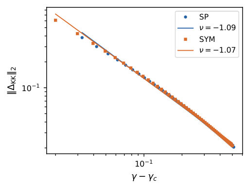
Fig 4. FIG. 4. Log-log scaling of ∥∆KK∥2 vs γ −γc. Circles: SP; squares: SYM. The extracted slope gives νSP = −1.08.
Summary. This paper demonstrates that causality in PT-symmetric systems is not just a binary property but carries a topological charge that changes at an exceptional point. It shows that while standard Kramers-Kronig relations fail in the broken phase, a corrected version can be derived. The study also reveals that the violation of standard KK relations is most intense at the phase transition threshold.
Why it may be interesting. It provides a novel topological interpretation of causality in non-Hermitian systems and introduces a model-independent diagnostic for identifying non-Hermitian gain through the breakdown of standard dispersion relations.
Detailed structure
**Main problem.** Investigating whether the failure of standard Kramers-Kronig relations in non-Hermitian systems can be described as a topological transition where causality carries a topological charge.
**Main result.** The authors show that causality in a PT-symmetric dimer carries a topological charge (Blaschke winding number) that jumps from 0 to 1 at the exceptional point, and that the violation of standard KK relations scales with a negative exponent of approximately -1.08.
**Method.** Analytical derivation using Heisenberg-Langevin equations, input-output relations, and the Blaschke winding number framework, supplemented by numerical verification of the residue-corrected dispersion relation.
**Model / system.** A PT-symmetric open dimer coupled to a one-port waveguide, modeled by an effective non-Hermitian Hamiltonian with gain-loss parameter gamma and coupling kappa.
**Key observables.** Blaschke winding number (Nb), KK residual (Delta_KK), and the scaling exponent (nu).
**Important parameters / regimes.** Gain-loss strength (gamma), coupling strength (kappa), and external coupling/decay (gamma_ex).
**Assumptions / limitations.** The system is treated within the Markov approximation using the Gardiner-Collett interaction; the scaling results are derived for a single-port geometry.
**Figures summary.** Figure 1 shows the trajectory of the reflection coefficient pole in the complex plane and a phase diagram of the exceptional point; Figure 2 compares phase diagrams for different coupling geometries.
**Paper structure.** The paper introduces the problem of KK violation, defines the PT-symmetric dimer model, derives the topological charge via the Blaschke winding number, presents the residue-corrected KK relation, analyzes the scaling of the KK residual, and proposes an experimental protocol.
Abstract
Causality in linear response is conventionally treated as a binary property: a response function is either analytic in the upper half-plane or it is not. We show that in a PT-symmetric open dimer it instead carries a topological charge. As the gain-loss parameter crosses the exceptional point, a single pole of the reflection coefficient migrates into the upper half-plane, the Blaschke winding number jumps from 0 to 1, and standard Kramers-Kronig (KK) reconstruction acquires a Lorentzian residual fixed by the pole residue. The transition is sharp, protected by the codimension-one structure of the exceptional point, and directly measurable in a one-port reflection experiment. Most strikingly, the violation magnitude scales as Delta_KK ~ |gamma - gamma_c|^nu with nu ~ -1.08 in the single-port geometry: the breakdown of standard KK is strongest at threshold and weakens deeper in the broken phase. We derive the exact reflection coefficient, verify the residue-corrected dispersion relation, and propose a THz time-domain spectroscopy protocol that detects the topological charge through the residual itself.
Authors: Andreas Dechant, Jann van der Meer Type: theory · Category: statistical mechanics · PDF:https://arxiv.org/pdf/2605.00656v1 Analysis basis: full PDF text, analyzed in chunks
Topic relevance:methods for driven-dissipative3/5 · non-equilibrium dynamics3/5 · entanglement & information structure2/5 · quantum measurements2/5
↔ Scroll figures horizontally
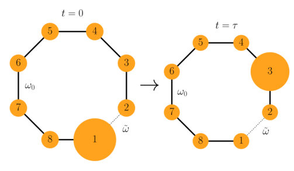
Fig 1. FIG. 1. Illustration of the example for a finite-time transport process. The system consists of N = 8 sites in a ring con- figuration, with transitions between neighboring sites. The symmetric part of the transition rates is ω(i, i + 1) = ω0, ex- cept for the transition between sites 1 and 2, which occurs at the lower rate ω(1, 2) = ˜ω. The size of the orange circles indi- cates the probability in the initial and final state: Initially, at t = 0, the most likely site is site 1, with all other sites being equiprobable, while finally at t = τ, we want the system to be at site 3 with the largest probability. This requires us to transport probability from site 1 to site 3, which can be done...
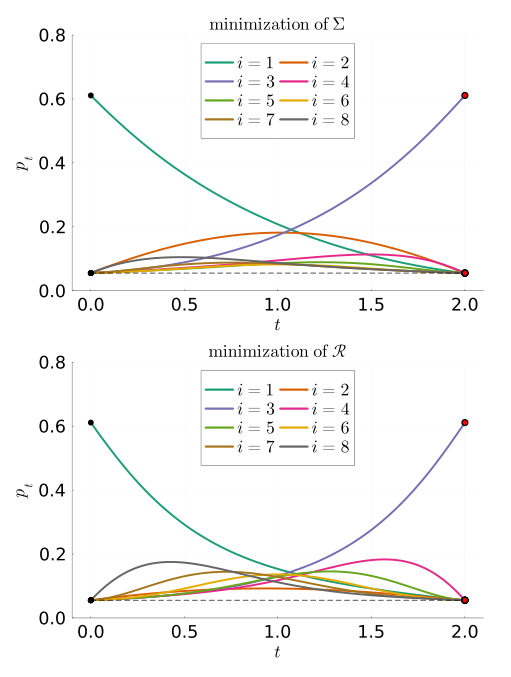
Fig 2. FIG. 2. Results for the optimal protocol realizing the trans- port process illustrated in Fig. 1 with N = 8, ω0 = 1, ˜ω = 0.003, p0(1) = 10p0(i) for all i ̸= 1, pτ(3) = 10pτ(i) for all i ̸= 3 and τ = 2. The top panel shows the optimal time-evolution of the probability distribution minimizing the entropy production, while the bottom panel shows the one minimizing the renormalized entropy production.
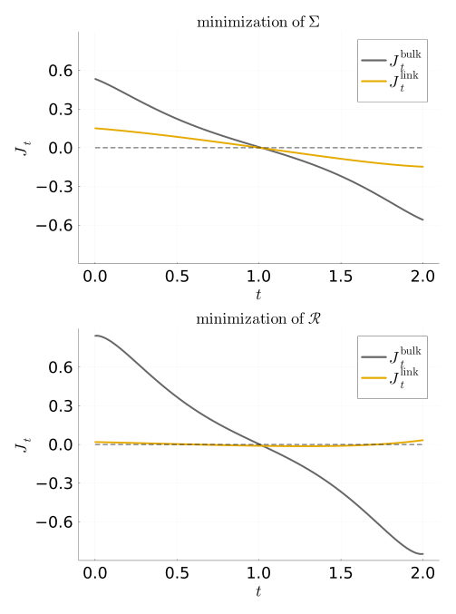
Fig 3. FIG. 3. Probability currents corresponding to Fig. 2. The cur- rent through the bulk sites is defined as the difference of the probability current entering site 8 and the probability current exiting site 4, Jbulk t = Jt(8, 1)−Jt(3, 4), while the correspond- ing current through the link is Jlink t = Jt(2, 1) −Jt(3, 2). The top panel shows the probability flows for the protocol mini- mizing the entropy production, while the bottom panel shows the one minimizing the renormalized entropy production.
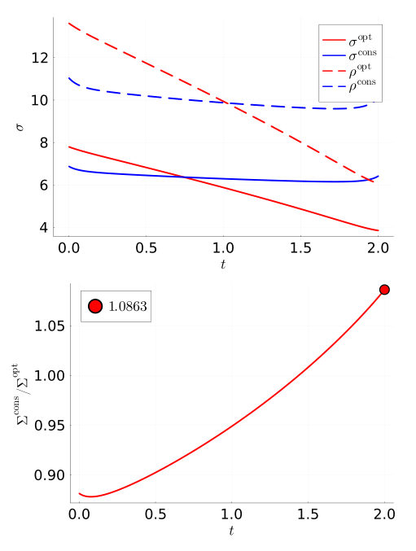
Fig 4. FIG. 4. Entropy production and renormalized entropy pro- duction for different optimal protocols. The top panel depicts the (renormalized) entropy production rate along the non- conservative optimal protocol that minimizes the entropy pro- duction (opt) or the conservative protocol that minimzies the renormalized entropy production (cons). The bottom panel shows the ratio of the entropy production for the conserva- tive forces minimizing the renormalized one and the minimal entropy production.
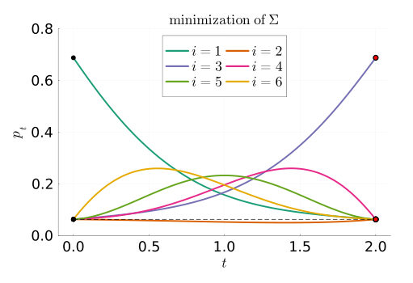
Fig 5. FIG. 5. Results for the optimal protocol minimizing entropy production for N = 6 sites. Other parameters are as specified in Fig. 2.
Summary. The paper identifies that standard entropy production is not minimized by conservative forces in jump processes. By proposing a 'renormalized' version of entropy production, the authors restore the principle that conservative forces are the optimal drivers for a given time evolution. This provides a more consistent thermodynamic framework for studying transport in discrete systems.
Why it may be interesting. This work is highly relevant to open quantum systems and many-body dynamics as it provides a new framework for understanding optimal driving and dissipation in discrete-state stochastic dynamics, which is essential for controlling quantum master equations.
Detailed structure
**Main problem.** In discrete-state Markov jump processes, the conservative forces that drive a system do not minimize the standard entropy production, breaking the fundamental connection found in continuous diffusion processes.
**Main result.** The authors introduce 'renormalized entropy production,' a new quantity that is uniquely minimized by conservative forces, thereby restoring the link between conservative driving and optimal transport.
**Method.** The study uses optimal transport theory, variational calculus with Lagrange multipliers, and Kullback-Leibler divergence analysis of trajectory probabilities.
**Model / system.** The model consists of Markov jump processes on a discrete state space governed by a Master Equation, where transition rates are parameterized by symmetric (activity) and skew-symmetric (thermodynamic force) components.
**Key observables.** Entropy production rate, renormalized entropy production, thermodynamic forces, probability currents, and dynamical activity.
**Important parameters / regimes.** Near-equilibrium vs. far-from-equilibrium regimes, inverse temperature (beta), and mobility (mu).
**Assumptions / limitations.** The state space is connected, the process is Markovian, and microscopic reversibility (detailed balance) holds for the underlying transition structure.
**Figures summary.** Figure 1 illustrates a transport problem on an 8-site ring with a weak link; Figure 2 shows the time-evolution of occupation probabilities for optimal and near-optimal protocols; Figure 3 compares probability currents in bulk vs. link paths.
**Paper structure.** The paper establishes the discrepancy in jump processes, constructs the renormalized entropy production, provides numerical illustrations, explores trajectory-dependent counterparts, and discusses speed limits and path-probability interpretations.
Abstract
For continuous-space diffusion processes, there is a strong connection between conservative forces and entropy production. For a given time evolution of the system's state, the entropy production is minimized when the system is driven by a unique conservative force. However, this relation does not extend to jump processes on a discrete state space. In this case, the forces that minimize the entropy production are generally nonconservative, this effect is more pronounced far from equilibrium in the presence of high energy barriers. Here we show that, while conservative forces do not minimize the entropy production for a given time evolution, they are nevertheless uniquely characterized as the minimizer of a quantity we dub the renormalized entropy production. This work explores the properties this quantity shares with entropy production as well as crucial differences between them. We also discuss the conceptual and physical differences between the corresponding optimization problems in finite time. Our theoretical calculations are illustrated with explicit numerical examples.
Authors: Jia-Wei Ji, Christoph Simon Type: theory · Category: other · PDF:https://arxiv.org/pdf/2605.00446v1 Analysis basis: full PDF text, analyzed in chunks
Topic relevance:Tavis-Cummings & cavity-many-emitter3/5 · correlated / nonlocal dissipation2/5 · methods for driven-dissipative2/5 · non-equilibrium dynamics2/5
↔ Scroll figures horizontally
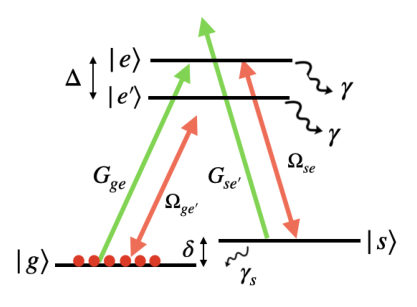
Fig 1. FIG. 1. The memory level diagram. The input signal drives the desired |g⟩−|e⟩transition with coupling strength Gge, while the control field drives the desired |s⟩−|e⟩tran- sition with time-dependent Rabi frequency Ωse(t). The un- wanted couplings are modeled explicitly through a distinct auxiliary excited state |e′⟩: the control field off-resonantly couples |g⟩−|e′⟩with strength Ωge′(t), and the signal off- resonantly couples |s⟩−|e′⟩with strength Gse′. This four-level scheme should be viewed as an extension of the idealized Λ- type memory, capturing the leading nearby-level correction while remaining analytically tractable. Both excited states |e⟩and |e′⟩are assumed to have the same...
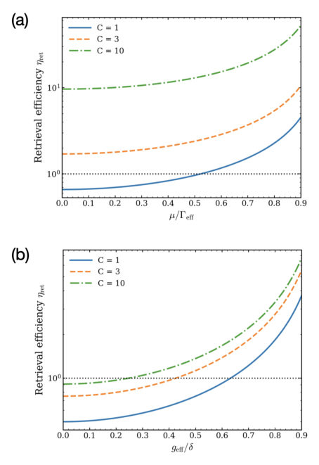
Fig 2. FIG. 2. Retrieval efficiency ηret in (a), plotted for the stable regime with geff > δ as a function of µ/Γeff, where µ = p
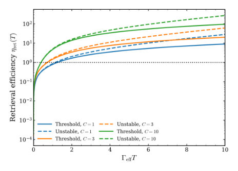
Fig 3. FIG. 3. Retrieval efficiency for the threshold and unstable regimes, plotted as a function of the dimensionless total pro- tocol time ΓeffT. The threshold regime satisfies Γeff = µ, and the unstable regime satisfies Γeff < µ. The curves correspond to cooperativities C = |Gge|2N/(γκ) = 1, 3, 10 in each regime. The fixed parameters are the same as those in Fig. 2 with δ = 1 MHz. The horizontal dotted line marks ηtot = 1, above which the total output exceeds the ideal single-photon limit and indicates amplification. In these two cases, the memory effectively operates as a photon source, emitting photons con- tinuously over time.
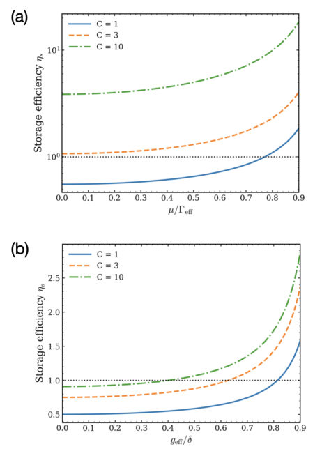
Fig 4. FIG. 4. Storage efficiency ηs in (a) and (b), plotted for the stable regime with geff > δ and geff < δ, respectively. For (a) and (b), the horizontal axis is the dimensionless ratios µ/Γeff and geff/δ, respectively. For the panel (b), since in this case δ ≫Γeff, the performance is dictated by the ratio of geff to δ. The curves correspond to cooperativities C = |Gge|2N/(γκ) = 1, 3, 10. The fixed parameters are the same as those in Fig. 2. The horizontal dotted line in both panels marks ηret = 1, above which the total output exceeds the ideal single-photon limit and indicates amplification.
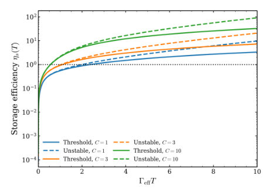
Fig 5. FIG. 5. Storage efficiency for the threshold and unstable regimes, plotted as a function of the dimensionless total pro- tocol time ΓeffT. The threshold regime satisfies Γeff = µ, and the unstable regime satisfies Γeff < µ. The curves correspond to cooperativities C = |Gge|2N/(γκ) = 1, 3, 10 in each regime. The fixed parameters are the same as those in Fig. 3 with δ = 1 MHz. The horizontal dotted line marks ηtot = 1, above which the total output exceeds the ideal single-photon limit and indicates amplification. In these two cases, the memory effectively operates as a photon source, emitting photons con- tinuously over time.
Summary. This paper studies how extra energy levels and unwanted field couplings impact the performance of cavity-based quantum memories. It reveals that while these couplings can boost efficiency through amplification, they simultaneously degrade the fidelity of the stored quantum state. The study establishes a clear distinction between functional memory operation and unwanted photon amplification.
Why it may be interesting. It provides a practical framework for optimizing realistic quantum memories by moving beyond idealized Lambda models, specifically addressing how noise and gain channels break time-reversal symmetry and affect fidelity.
Detailed structure
**Main problem.** Investigating how unwanted couplings and additional energy levels in a four-level system affect the performance of cavity-based ensemble quantum memories, specifically distinguishing between faithful storage and unwanted amplification.
**Main result.** The authors identify three dynamical regimes (stable, threshold, and unstable) and demonstrate an efficiency-fidelity trade-off where unwanted couplings can increase total efficiency (even leading to amplification) at the cost of reduced fidelity.
**Method.** A fully quantum treatment using Heisenberg-Langevin equations, involving adiabatic elimination of excited states and the cavity mode, and a Bogoliubov transform to solve the dynamics.
**Model / system.** A four-level extension of a cavity-based Lambda-type ensemble memory involving a ground state, a metastable spin state, and two excited states, subject to both desired and off-resonant unwanted couplings.
**Key observables.** Single-photon storage efficiency, retrieval efficiency, operational fidelity (signal-to-noise ratio), and photon flux.
**Important parameters / regimes.** Cooperativity (C), effective decay rate (Gamma_eff), effective coupling (g_eff), ground-state splitting (delta), and the ratio mu/Gamma_eff.
**Assumptions / limitations.** Low-excitation/weak-excitation regime, adiabatic elimination of excited states and cavity mode, bad-cavity approximation, and neglecting spin decoherence.
**Figures summary.** Figure 1 shows the four-level energy scheme; Figure 2 shows retrieval efficiency vs. mu/Gamma_eff; Figures 4 and 7 plot storage efficiency and fidelity across different regimes and cooperativity values; Figure 8 compares efficiency in threshold and unstable regimes over time.
**Paper structure.** The paper introduces the four-level model, derives the effective dynamics and analytical expressions for efficiency and fidelity, identifies the three dynamical regimes, analyzes the efficiency-fidelity trade-off, and concludes with implications for realistic warm-vapor memories.
Abstract
Quantum-memory models often reduce complex level structures to an idealized $Λ$ system, potentially missing nearby levels and unwanted couplings that can qualitatively alter the predicted performance. Here, we study an extension of a cavity-based $Λ$-type ensemble memory, a four-level model with unwanted couplings from both the control field and signal, using a fully quantum treatment. We derive explicit expressions for the single-photon storage efficiency, retrieval efficiency, and fidelity, and on this basis identify three distinct dynamical regimes: stable, threshold, and unstable. Within the stable regime, we additionally discriminate between two qualitatively different sub-regimes. Applying the theory to warm-vapor-inspired parameters, we determine the conditions under which the system can still operate as a high-quality quantum memory. More generally, our results provide a practical framework for distinguishing genuine memory operation from amplification and for optimizing realistic quantum memories beyond idealized models.
Authors: Mingrui Yuan, Nikolay V. Golubev Type: theory · Category: other · PDF:https://arxiv.org/pdf/2605.00286v1 Analysis basis: full PDF text, analyzed in chunks
Topic relevance:Keldysh / 2PI / non-Gaussian methods3/5 · non-equilibrium dynamics2/5 · quantum measurements2/5
↔ Scroll figures horizontally
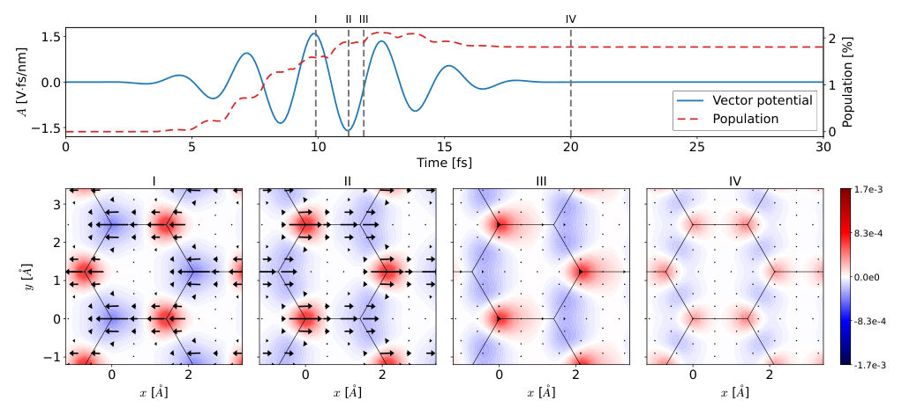
Fig 1. FIG. 1. Laser-driven electron dynamics in graphene. Top panel: The blue curve represents the vector potential of the pump laser field polarized along x direction, while the red line depicts the evolution of the population of the conduction band of graphene. Bottom panel: The snapshots of the integrated real space electron difference density (contour plots) and the electron current density (arrows). The four columns depict the time instances tI = 9.8 fs, tII = 11.2 fs, tIII = 11.8 fs, and tIV = 20.0 fs, indicated by the vertical grey dashed lines in top panel. More detailed discussion of the utilized computational procedure can be found in Ref. [99].Fig 2. FIG. 2. Simulated electron diffraction measurements prob- ing the laser-driven dynamics of electron density and elec- tron current density in graphene. (a) Vector potential of the pump field. (b) and (c) Comparison of density-density (orange solid line), density-current (purple dashed line), and current-current (green dash-dotted line) contributions to the time-resolved diffraction signal at the [1, 1] and [1, −1] Bragg spots of graphene, respectively. The inset schematically shows the positions of the graphene Bragg spots and highlights those analyzed in panels (b) and (c).
Summary. This paper presents a unified theoretical framework for both time-resolved x-ray and electron diffraction imaging using quantum field theory. By establishing a common formalism, it allows for a consistent comparison of how different probes capture ultrafast quantum dynamics. The authors demonstrate the utility of this approach by simulating laser-driven electron motion in graphene.
Why it may be interesting. It provides a rigorous field-theoretic bridge between different types of ultrafast probes, which is highly relevant for researchers studying the coherent interaction of light and matter and the development of new quantum imaging techniques.
Detailed structure
**Main problem.** The lack of a unified theoretical framework to describe and compare time-resolved x-ray diffraction (TR-XRD) and ultrafast electron diffraction (TR-UED) within a consistent formalism.
**Main result.** The authors develop a unified quantum-field-based description that encompasses both TR-XRD and TR-UED, allowing for the systematic disentanglement of their similarities and differences.
**Method.** The approach uses quantum field theory and time-dependent perturbation theory to derive scattering probabilities, extending the time-dependent formulation of x-ray scattering to arbitrary particles.
**Model / system.** The model describes the interaction between a probe beam (photons for x-rays or electrons for TR-UED) and a target system, specifically applied to laser-driven electron dynamics in monolayer graphene.
**Key observables.** Scattering probability, differential scattering cross-section, electron density dynamics, and electron current dynamics.
**Important parameters / regimes.** Ultrafast/non-equilibrium regimes, femtosecond and sub-femtosecond temporal resolution, and the relativistic Breit interaction for electron scattering.
**Assumptions / limitations.** Assumes the unperturbed Hamiltonian is separable, neglects electron exchange between beam and target, and uses the non-retardation approximation for the electromagnetic interaction.
**Paper structure.** The paper begins by identifying the need for a unified framework, establishes a general quantum-field-based scattering theory, derives specific matrix elements for both x-ray and electron beams, and concludes with a numerical simulation of electron dynamics in graphene.
Abstract
Time-resolved x-ray diffraction (TR-XRD) and ultrafast electron diffraction (TR-UED) are emerging tools for probing ultrafast quantum dynamics. From a theoretical perspective, they are commonly described within different frameworks and modeled using distinct approximations. Here, we present a unified quantum-field-based description of ultrafast diffraction imaging that permits consistent consideration of TR-XRD and TR-UED within a common theoretical formalism. Our approach elucidates the correspondence between TR-XRD and TR-UED and allows their similarities and differences to be systematically disentangled. The developed formalism is sufficiently general to consistently and straightforwardly incorporate additional physical effects of interest, such as relativistic charge-current and current-current couplings. We apply our approach to simulate diffraction measurements of laser-driven electron dynamics in graphene, demonstrating the unique capabilities of diffraction imaging to unravel intricate quantum processes in matter.
Authors: Janis Nötzel, Florian Seitz Type: theory · Category: quantum information and computing · PDF:https://arxiv.org/pdf/2605.00132v1 Analysis basis: full PDF text, analyzed in chunks
Topic relevance:entanglement & information structure3/5 · quantum measurements2/5
↔ Scroll figures horizontally
Fig 1. Fig. 1. Depicted are O and ∆as part of the convex polytope P({0, 1}2), using r = A = 2. We observe that O approaches q0 and q1 in its limits.
Summary. The paper shows that entanglement can be used to establish shared correlations between a sender and receiver to overcome jamming attacks in optical channels. By using Two-Mode Squeezed Vacuum states, the parties can transform a zero-capacity, symmetrizable channel into a functional communication channel. This provides a way to 'bootstrap' communication in environments where an adversary is actively trying to disrupt signal synchronization.
Why it may be interesting. This work is highly relevant to quantum optics and open quantum systems as it explores how entanglement-assisted protocols can provide resilience against adversarial noise (jamming) and demonstrates a super-activation-like phenomenon in bosonic channels.
Detailed structure
**Main problem.** The paper addresses the 'bootstrap' problem in communication: how a sender and receiver can establish shared randomness to stabilize an Arbitrarily Varying Channel (AVC) against a jammer when no pre-shared resources exist.
**Main result.** The authors demonstrate that using entangled Two-Mode Squeezed Vacuum (TMSV) states allows the sender and receiver to break channel symmetrizability and achieve positive communication capacity, even when a jammer can otherwise reduce the capacity to zero.
**Method.** The study uses Gaussian covariance matrices, Wigner functions, and information-theoretic bounds (like Pinsker's inequality) to analyze a correlation distribution procedure involving homodyne detection and sign binarization.
**Model / system.** A quantum-optical communication model using a beam splitter with transmissivity eta, involving coherent states for BPSK signaling and Two-Mode Squeezed Vacuum (TMSV) states as a quantum resource, subject to an energy-limited Gaussian jammer.
**Key observables.** Binarized correlation coefficient (rho_bin), quadrature measurements (x, p), and channel capacities (C, C_bar, C_tilde).
**Important parameters / regimes.** Squeezing magnitude (r), beam splitter transmissivity (eta), jamming energy (alpha^2), and BPSK amplitude (alpha).
**Assumptions / limitations.** The jammer is assumed to be energy-limited and restricted to using Gaussian states; the communication model is based on a standard optical setup.
**Figures summary.** Figure 1 provides a visualization of the probability space of correlations, depicting the set of possible correlations within a convex polytope.
**Paper structure.** The paper introduces the jamming problem and the bootstrap challenge, describes the quantum-optical communication model and TMSV protocol, presents the mathematical proof for capacity enhancement and correlation persistence, and concludes with an appendix proving the monotonicity of binarized Gaussian correlations.
Abstract
Shared randomness is the central ingredient for stabilizing symmetrizable communication systems against arbitrarily varying jammers. Given the presence of the jammer, however, the question arises how this precious resource could have been distributed. Several works discuss the use of external sources for this task. In this work, we show, based on the most standard optical communication model, how the sender and receiver can employ entangled two-mode squeezed states to counter the jamming attack of an energy-limited jammer during the distribution phase when both the sender and jammer are allowed to use binary phase shift keying and two-mode squeezed vacuum states.
Authors: Nicolás Ciancaglini, Santiago Cifuentes, Guido Bellomo, Santiago Figueira, Ariel Bendersky Type: theory · Category: quantum information and computing · PDF:https://arxiv.org/pdf/2605.00341v1 Analysis basis: full PDF text, analyzed in chunks
Topic relevance:entanglement & information structure3/5 · quantum measurements2/5
↔ Scroll figures horizontally
Fig 1. Figure 1. Parent-child relationship in the tree. The set S is partitioned into the disjoint subsets S1 and S2. Likewise, the set S1 is partitioned into S11 and S12.Fig 2. Figure 2. We show some branches of the tree starting from the root, which corresponds to the set of all indices. We partition the set Γλ by considering the subsets of strings that start with I, X, Y or Z.Fig 3. Figure 3. Circuit used to estimate Kµ using a mod- ification of the SWAP test.Fig 4. Figure 4. Success probability of recovering (I⊗n + X⊗n)/2n for different values of n and different sam- ple sizes. Each data point is obtained by running 100 simulations and averaging.Fig 5. Figure 5. Number of nodes visited when trying to recover (In + Xn)/2n for different values of n and different sample sizes. Each data point is obtained by running 100 simulations and averaging.
Summary. The paper introduces a new algorithm to find the most significant components of a quantum state in the Pauli basis using a tree-based search. By avoiding full tomography, it offers an efficient way to reconstruct structured states like stabilizer states. The method's efficiency depends on the state's purity and sparsity.
Why it may be interesting. This work provides a practical tool for the targeted characterization of large-scale quantum states, which is highly relevant for verifying many-body states and error-corrected systems in quantum computing.
Detailed structure
**Main problem.** Efficiently identifying and measuring the largest Pauli coefficients of an unknown n-qubit quantum state without the exponential cost of full state tomography.
**Main result.** The authors develop a hierarchical tree-based algorithm that can identify significant Pauli coefficients with a complexity bounded by the state's purity and the desired threshold, achieving near-optimal scaling for structured states like stabilizer states.
**Method.** A hierarchical algorithm using a prefix-based tree traversal where node weights are estimated via Bell sampling on two copies of the state or via modified SWAP tests.
**Model / system.** n-qubit quantum states, specifically focusing on sparse representations such as stabilizer states and Pauli-singleton states.
**Key observables.** Pauli coefficients (c_nu) and node weights (K_mu), which represent the sum of squared coefficients within a specific Pauli prefix subset.
**Important parameters / regimes.** Purity (Tr[rho^2]), coefficient threshold (epsilon), number of qubits (n), and the number of samples (M).
**Assumptions / limitations.** The algorithm assumes the state has a sparse or structured representation in the Pauli basis to avoid exponential node expansion; it also assumes access to two copies of the state for Bell sampling.
**Figures summary.** Figure 1 shows tree partitioning; Figure 2 visualizes the prefix tree structure; Figure 3 shows the SWAP test circuit; Figures 4-7 present numerical results on success probabilities and node expansion scaling for Pauli-singleton and stabilizer states.
**Paper structure.** Introduction of the search problem, description of the hierarchical tree algorithm, derivation of node weight estimation methods (Bell sampling/SWAP tests), complexity analysis for finding coefficients above a threshold or the top t coefficients, and numerical validation using stabilizer and Pauli-singleton states.
Abstract
We introduce a hierarchical algorithm for identifying the largest Pauli coefficients of an unknown $n$-qubit quantum state. The algorithm traverses a prefix-based tree whose nodes represent partial sums of squared Pauli coefficients, always expanding branches with the largest estimated weight and discarding the rest. Node weights are estimated using Bell sampling on two copies of the state, or alternatively via SWAP tests on subsystems. We analyze the sample complexity of each node estimation and derive bounds on the total number of nodes expanded as a function of the desired number of coefficients and the state's purity. For states admitting a sparse representation in the Pauli basis, the algorithm achieves a good reconstruction of the dominant components without requiring full state tomography. We validate the method with numerical simulations on Pauli-singleton states and random stabilizer states, showing that the algorithm's performance is competitive with other methods for structured states. Our work addresses an open problem in Pauli sampling and provides a practical tool for the targeted characterization of structured quantum states.
Authors: Yi Xiao, Yi Wu, Qi-Kai Zhan, Jin Lian Zhang, Bing He, Qing Lin Type: theory · Category: other · PDF:https://arxiv.org/pdf/2605.00338v1 Analysis basis: full PDF text, analyzed in chunks
Topic relevance:non-equilibrium dynamics3/5 · driven-dissipative phase transition2/5
↔ Scroll figures horizontally
Fig 1. FIG. 1. An OMS driven by a two-tone field with the example of Fabry-P`erot (FP) cavity with movable mirror. If the two tones of driving laser field satisfy Eq. (5), the displacement of mechanical res- onator (the movable mirror) can evolve through a number of quasi- stable states of step like as in the inset. To have the variable step sizes, the ratio ωm/κ should be within a certain regime. We demon- strate the step wise evolution by means of the associated mechanical energy in the other figures, so that the feature is even clearer.Fig 2. FIG. 2. Four different scenarios of evolving mechanical energy and intracavity field intensity. (a) A COMS in the resolved sideband regime (ωm/κ = 10) is driven by a single-tone field blue-detuned at ∆= −ωm. The inset shows that the patterns of the continuous intracavity field in those quasi-stable states are similar but have the increased peak numbers from one step to another. (b) A COMS in the unresolved sideband regime (ωm/κ = 0.5) is driven by a two-tone field satisfying Eq. (5). Here, only pulsed intracavity field exists around each termination of half mechanical oscillation period and one mechanical oscillation period. The prominent pulses after each mechanical oscillation push the...Fig 3. FIG. 3. (a) Comparison of the evolution trajectories for the mechanical resonators of the same built-in frequency ωm = 1.5κ, but with the different quality factors: Q = 105 for the red curve and Q = 104 for the blue curve. The other parameters for the curves are indicated by those of the corresponding colors in (b). The other one with Q = 104, the green curve, is due to a drive amplitude E = 6 × 105κ higher than those of the blue and green curve under E = 5 × 105κ. Here two drives tones are fixed at ∆1 = 0, ∆2 = −ωm. On the same level of steps A and B counted from the starting point, the intracavity field patterns are identical. The first-order sideband for the continuous intracavity fields...Fig 4. FIG. 4. (a) The oscillatory staircase evolution due to different built-in mechanical frequency. Here, the fixed system parameters are E = 5 × 105κ and Q = 105. (b) The oscillatory staircase phenomenon for different mechanical quality factors Q = ωm/γm. Here we fix the parameters at ωm = 2κ and E = 9 × 105κ.Fig 5. FIG. 5. (a) A bifurcation due to the difference in the powers of the drive tones. Here one of the tone is fixed at E1 = 5 × 105κ, and the other one is increased gradually. There is a sudden change of the associated intracavity field spectrum and the evolution pattern of mechanical energy, after the tone amplitude E2 is adjusted across the indicated values. (b) Corresponding relation between the evolved mechanical energy and the pump amplitude E2, given the fixed E1 = 5 × 105κ. The other fixed parameters are ∆1 = 0, ∆2 = ωm, Q = 105, and ωm = 2κ.
Summary. This paper discovers a new 'staircase' pattern of mechanical energy growth in optomechanical systems operating at intermediate mechanical frequencies. It demonstrates how this pattern is sensitive to driving parameters and proposes its use for advanced sensing and phonon laser applications.
Why it may be interesting. It provides new insights into the non-equilibrium dynamics of driven-dissipative systems and identifies a new dynamical regime that could be utilized for high-precision sensing and phonon laser generation.
Detailed structure
**Main problem.** The study investigates a previously unknown 'staircase' evolution pattern of mechanical energy in cavity optomechanical systems (COMS) when driven by a two-tone field in the intermediate frequency regime.
**Main result.** The authors identify a staircase-like energy growth pattern occurring when the mechanical frequency is comparable to the cavity damping rate, noting that this regime exhibits unique bifurcations and sensitive responses to frequency mismatches.
**Method.** The researchers used numerical simulations of coupled differential equations for the intracavity field and mechanical resonator, alongside analytical approximations using Bessel function expansions for sideband amplitudes.
**Model / system.** A cavity optomechanical system (COMS), such as a Fabry-Perot cavity with a movable mirror, driven by a two-tone laser field where the frequency difference matches the mechanical frequency.
**Key observables.** Mechanical energy (phonon number), mechanical amplitude, mechanical frequency, intracavity field intensity, and sideband amplitudes.
**Important parameters / regimes.** Mechanical frequency to cavity damping ratio (omega_m/kappa), mechanical quality factor (Q), drive tone powers, and frequency mismatch (delta).
**Assumptions / limitations.** The analysis focuses on the intermediate regime where omega_m is neither much larger nor much smaller than kappa; the model assumes a specific two-tone driving condition.
**Figures summary.** Figure 1 shows the COMS setup and step-like displacement; Figure 2 compares energy evolution across resolved, unresolved, and intermediate regimes; Figure 3 examines the influence of the quality factor; Figure 6 illustrates the effects of positive and negative frequency mismatch.
**Paper structure.** The paper introduces the optomechanical system and the problem, compares different sideband regimes, details the discovery of the staircase pattern in the intermediate regime, analyzes the impact of system parameters like Q and power, explores frequency mismatch effects, and concludes with potential applications.
Abstract
Owing to the radiation-force-induced nonlinearity, cavity optomechanical systems (COMS) exhibit dynamical phenomena such as back-action induced oscillation, chaos, mechanical amplitude locking, and anomalous stabilization, which occur under different driving conditions and different system parameters. We here identify a previously unknown dynamical pattern of staircase evolution for the energy of mechanical resonator, when a COMS with neither very large nor very small built-in mechanical frequency is driven by a two-tone field, which satisfies a condition that the frequency difference of the two tones matches the built-in mechanical frequency. The properties of this phenomenon are analyzed for the different system parameters due to fabrication such as mechanical frequencies and quality factors, as well as under the varied driving conditions such as unequal drive tone powers and mismatched drive tone difference from the mechanical frequency. Some special features, such as an emergent bifurcation due to the tone power difference, together with the totally different responses of the system to the drive tone mismatches of opposite signs, are discovered to exist only in this type of COMS with median mechanical frequencies. This work fills a gap in the study of the dynamics of COMS under two-tone drives. In the aspect of applications, the rapid increase of mechanical energy exhibited in the phenomenon promises phonon laser generation, and the sensitive dynamical response to the drive tone mismatches offers a potential approach to high-precision sensing.
Authors: Yi Gu, Song-Ping Wang, Wei Zhong Type: theory · Category: quantum information and computing · PDF:https://arxiv.org/pdf/2605.00331v1 Analysis basis: full PDF text, analyzed in chunks
Topic relevance:interference shaping light3/5 · quantum measurements2/5
↔ Scroll figures horizontally
Fig 1. Figure 2. (Color online) Scaled phase sensitivity √¯n∆φ as a function of the squeezing parameter r for α = √Fig 2. Figure 1. (Color online) Schematic of (a) the conventional Caves scheme using a standard Mach-Zehnder interferometer (MZI) fed by a coherent state (CS) and a squeezed-vacuum state (SVS), and (b) the DS-MZI scheme, where a vacuum state (VS) is squeezed by S1 before entering the MZI, and an additional squeezer S2 is applied to one output mode prior to detection. The Wigner quasi-probability distributions for the output ports are plotted for equal input intensities.Fig 3. Figure 3. (Color online) Scaled phase sensitivity √¯n∆φ as a function of the squeezing parameter r under imperfect detec- tion for α = √Fig 4. Figure 4. (Color online) Performance comparison of the unbalanced DS-MZI under imperfect detection for α= √
Summary. The paper proposes a new dual-squeezing interferometer design that overcomes the fundamental limitation where phase sensitivity diverges in standard setups. By adding a second squeezer at the output, the scheme achieves Heisenberg-limited sensitivity that remains robust even with imperfect detectors. This provides a feasible path toward high-precision quantum-limited measurements.
Why it may be interesting. This work is highly relevant to quantum optics and quantum information as it proposes a practical, robust method to reach the fundamental Heisenberg limit in interferometry, overcoming the practical limitations of signal vanishing and detection loss.
Detailed structure
**Main problem.** Standard Mach-Zehnder interferometers (MZI) fail to achieve Heisenberg-limited phase sensitivity using direct photon-number-difference detection in the optimal equal-intensity regime due to a vanishing signal and divergence in sensitivity.
**Main result.** The introduction of a dual-squeezing approach (DS-MZI) eliminates the signal divergence and enables Heisenberg-limited phase sensitivity that is robust against detection noise and photon loss.
**Method.** The authors use an analytical framework involving SU(2) and SU(1,1) algebraic operators, error propagation formulas, and Wigner function analysis to evaluate phase sensitivity and robustness.
**Model / system.** A Dual-Squeezing Mach-Zehnder Interferometer (DS-MZI) consisting of two single-mode squeezers (one at the input and one at the output), beam splitters, and a phase shifter, fed with a coherent state and a squeezed-vacuum state.
**Key observables.** Photon-number-difference (N-), total photon-number (N+), and phase sensitivity (delta phi).
**Important parameters / regimes.** Squeezing parameters (r1, r2), detection efficiency (eta), input amplitude (alpha), and the equal-intensity regime (alpha^2 approx sinh^2 r).
**Assumptions / limitations.** The interferometer is assumed to be lossless for the derivation of the Quantum Fisher Information, and the optical elements are assumed to preserve Gaussian statistics.
**Figures summary.** Figure 1 illustrates the Wigner function distributions showing the elliptical distribution of the DS-MZI; Figure 3 compares the scaled phase sensitivity of the conventional MZI versus the DS-MZI under imperfect detection efficiency.
**Paper structure.** The paper identifies the divergence problem in standard MZI, introduces the DS-MZI architecture, provides an analytical derivation of phase sensitivity using operator algebra, evaluates performance under imperfect detection, and compares the results to the Heisenberg limit.
Abstract
The canonical Mach-Zehnder interferometer fed with a coherent state and a squeezed-vacuum state of equal intensities is theoretically predicted to achieve Heisenberg scaling in phase sensitivity. However, this ultimate performance is unattainable using direct photon-number-difference detection due to a divergence arising precisely at the optimal equal-intensity regime. In this work, we introduce a dual-squeezing approach that overcomes this fundamental limitation. Our scheme employs an additional single-mode squeezer before detection, forming a paired configuration with the input squeezer used to generate the squeezed-vacuum state. We analytically demonstrate that the resulting dual-squeezing Mach-Zehnder interferometer enables Heisenberg-limited phase sensitivity with di rect photon-number-difference detection, while remaining robust against detection noise. Our work provides a feasible and robust route toward quantum-limited interferometric phase measurements
Authors: Yuefeng Lin, Chao Zheng, Cong Guo Type: both · Category: quantum information and computing · PDF:https://arxiv.org/pdf/2605.00739v1 Analysis basis: full PDF text, analyzed in chunks
Topic relevance:QC/QI experiment3/5
↔ Scroll figures horizontally
Fig 1. Figure 2. Success rate as a function of circuit depth for the proposed problem-inspired ansatz. Results are shown for TSP instances with n = 4,5,6 cities. Solid curves denote the average success rate over 10 randomly generated graph instances. Shaded regions indicate the absolute performance range across the 10 instances, bounded by the minimum and maximum success rates.Fig 2. Figure 3. Performance comparison between the proposed problem-inspired ansatz and the prior one-hot feasible-subspace ansatz reported in Ref.19. Bars denote the average success rate over 10 randomly generated TSP instances for each problem size. Error bars indicate the absolute performance range across instances, bounded by the minimum and maximum success rates.Fig 3. Figure 4. Optimization trajectories on SpinQ Gemini Pro for the 5-city TSP instance. Panel (a) shows the loss values obtained from raw noisy measurements, iterative Bayesian unfolding (IBU), matrix-inversion-based mitigation, and the noise-free simulator. Panel (b) shows the corresponding target-state probabilities during optimization.Fig 4. Figure 5. Optimization trajectories on Triangulum II for the 5-city TSP instance. Panel (a) shows the loss values obtained from raw noisy measurements, iterative Bayesian unfolding (IBU), matrix-inversion-based mitigation, and the noise-free simulator. Panel (b) shows the corresponding target-state probabilities during optimization.
Summary. This paper introduces a resource-efficient quantum framework for solving the Traveling Salesman Problem by reducing qubit requirements from quadratic to near-linear scaling. By using a divide-and-conquer strategy and compact binary encoding, the authors demonstrate that even very small, noisy quantum hardware can successfully solve small-scale combinatorial optimization problems.
Why it may be interesting. not directly relevant
Detailed structure
**Main problem.** The quadratic qubit overhead of standard one-hot encoding makes implementing the Traveling Salesman Problem (TSP) impractical on NISQ hardware. The paper seeks to reduce qubit requirements and enable execution on extremely resource-constrained devices.
**Main result.** The proposed framework reduces qubit scaling from O(n^2) to O(n log n) and achieves success rates up to 100% in simulations. Hardware experiments on NMR quantum computers successfully identified optimal tours for a 5-city instance using a divide-and-conquer strategy.
**Method.** The authors use a compact binary-register encoding, a permutation-preserving ansatz with parameterized SWAP operations, and a divide-and-conquer strategy that factorizes the global state into smaller subsystems. Error mitigation techniques like Iterative Bayesian Unfolding (IBU) are also employed.
**Model / system.** The problem is modeled as a Traveling Salesman Problem (TSP) using a QUBO-derived Ising Hamiltonian. Experimental validation was performed on SpinQ Gemini Pro and SpinQ Triangulum II NMR quantum computers.
**Key observables.** Average success rate (finding the optimal tour), loss function value, and target-state probability.
**Important parameters / regimes.** Number of cities (n=4, 5, 6), circuit depth (L), penalty coefficients (lambda, mu), and number of optimization iterations.
**Assumptions / limitations.** The divide-and-conquer approach assumes a product-state approximation that neglects inter-subsystem entanglement. The benchmark is also limited to small-scale TSP instances.
**Figures summary.** Figure 1 shows the two-qubit variational circuit; Figure 2 plots success rate vs. circuit depth; Figure 3 compares the proposed ansatz to the one-hot method; Figures 4 and 5 show optimization trajectories on NMR hardware comparing different error mitigation methods.
**Paper structure.** The paper introduces the qubit overhead problem, proposes a compact encoding and permutation-preserving ansatz, details a divide-and-conquer execution strategy, presents numerical simulation results, and concludes with hardware validation on NMR quantum computers.
Abstract
The Traveling Salesman Problem (TSP) is a prototypical combinatorial optimization problem, but its quantum implementation is limited by the O(n^2)-qubit overhead of standard one-hot encodings. Here, we propose a resource-efficient variational quantum framework based on compact binary-register encoding, a permutation-preserving problem-inspired ansatz, and a complementary divide-and-conquer execution strategy. The compact encoding reduces the data-qubit requirement to O(n log n), while the divide-and-conquer formulation lowers the number of qubits required in each local hardware execution to the size of the largest subsystem. Numerical simulations on TSP instances with 4, 5, and 6 cities achieve best average success rates of 100%, 100%, and 95.5%, respectively. A local two-qubit implementation of the divide-and-conquer approximation is further evaluated for a 5-city TSP instance on SpinQ Gemini Pro and SpinQ Triangulum II NMR quantum computers. Taken together, the results indicate how compact encoding and divide-and-conquer execution with classical post-processing can be used to study small combinatorial optimization instances on resource-constrained quantum hardware.
Authors: Alexandru Golic, Egor Babaev, Johan Carlström Type: theory · Category: quantum gases · PDF:https://arxiv.org/pdf/2605.00137v1 Analysis basis: full PDF text, analyzed in chunks
Topic relevance:analog quantum simulation3/5
↔ Scroll figures horizontally
Fig 1. FIG. 2. Critical temperature of the quadrupling-normal transition for the sign-free simulations as a function of 1/(ln L/L0)2, where L is the linear system size and L0 is a fit parameter from the finite-size scaling. Points show simulation data with error bars and the solid lines represent the linear fit to the universal scaling form. This fit corresponds to the parameters Tc2 ≈0.805±0.001 (equivalent to βBKT ≈1.242), A ≈0.275 ± 0.032 and L0 ≈1.52 ± 0.20.Fig 2. FIG. 1. Critical temperature of the superfluid-quadrupling transition for the sign-free simulations as a function of 1/(ln L/L0)2 where L is the linear system size and L0 is a fit parameter from the finite-size scaling. Points show simulation data with error bars and the solid lines represent the linear fit to the universal scaling form. This fit corresponds to the pa- rameters Tc1 ≈0.3192±0.0013 (equivalent to βBKT ≈3.133), A ≈0.1525 ± 0.0376 and L0 ≈4.25 ± 0.98.Fig 3. FIG. 3. Relative intercomponent drag |ρd/ρs| as a function of inverse temperature β and microscopic counter-hopping strength q at the system size L ≈68 for the sign-free model. The dashed line denotes ρd/ρs = 0.5. The high temperature behavior of the drag for each q signals the critical nature of the transition away from superfluidity. For q ≲2.25 the transi- tion is driven by the disordering of single phases ϕ1, ϕ2, while for q ≳2.25 it is driven by disordering of one of the two linear combinations ϕ1 ± ϕ2. The line |ρd/ρs| = 0.5 is the marginal point where the single component superfluid stiffness is equal to one of the composite superfluid stiffnesses.Fig 4. FIG. 4. Relative difference in phase stiffness ρFermi/ρBose −1 between bosons and fermions in a system with negative drag. The left picture shows the relative difference in the co-flow stiffness at T = 0.25, significantly below the superfluid- supercounterfluid transition for the bosonic system. The right picture shows the relative difference in the counter-flow stiff- ness at T ≈0.77, slightly below the supercounterfluid-normal transition for the bosonic system.Fig 5. FIG. 5. Critical temperature of the quadrupling-normal tran- sition as a function of 1/(ln L/L0)2 where L is the linear system size and L0 is a fit parameter from the finite-size scaling for a system of infinitely bound pairs (U = −∞). Points show simulation data with error bars and the solid lines represent the linear fit to the universal scaling form. This fit corresponds to the parameters TBKT ≈0.9684 ± 0.0017 (equivalent to βBKT ≈1.033), A ≈0.6103 ± 0.0896 and L0 ≈0.5792 ± 0.1160.
Summary. This paper uses Quantum Monte Carlo simulations to prove that fermions can form a 'quadrupling condensate' through correlated hopping. It overcomes the fermionic sign problem to show that these exotic four-fermion states are theoretically robust and likely observable in ultracold atomic gases.
Why it may be interesting. It demonstrates a way to numerically access exotic, non-BCS phases like charge-4e superconductivity and provides a roadmap for observing these states in ultracold atomic platforms.
Detailed structure
**Main problem.** Investigating whether fermionic condensation can occur via higher-order 'quadruplets' (four-fermion order) rather than standard BCS pairing, and overcoming the numerical difficulty of the fermionic sign problem.
**Main result.** The study provides direct numerical evidence for a fermion-quadrupling condensate in a microscopic model, demonstrating that these exotic states are experimentally accessible in ultracold atomic gases.
**Method.** Large-scale Quantum Monte Carlo (QMC) simulations using the Worm algorithm, combined with a sign-free approximation and Renormalization Group (RG) analysis of vortex proliferation.
**Model / system.** A two-component fermionic lattice model (a generalization of the Penson-Kolb-Hubbard model) on hexagonal and square lattices, featuring correlated hopping and Andreev-Bashkin drag.
**Key observables.** Phase-stiffness matrix (including co-flow and counter-flow stiffness), four-fermion correlators, and vortex densities.
**Important parameters / regimes.** Strong-coupling regime (mu = -3.1, U = -6, t = 1, d = 1, q = 3); relative drag parameter |rho_d/rho_s|; and the transition driver parameter q.
**Assumptions / limitations.** The use of a sign-free approximation (treating fermions as hard-core bosons) is validated for certain observables, though it may not precisely locate the superfluid-quadrupling transition.
**Figures summary.** Figure 4 shows the relative difference in stiffnesses between the full fermionic model and the sign-free approximation, indicating negligible error for larger stiffnesses.
**Paper structure.** The paper introduces the problem of higher-order fermionic order, presents a microscopic model with correlated hopping, describes the QMC and sign-mitigation methods, analyzes phase transitions via RG and vortex dynamics, and concludes with experimental implications for ultracold gases.
Abstract
Fermionic condensation typically occurs via pairing. In recent decades, however, a fundamental question has emerged: whether alternative forms of order exist, such as condensates of fermion quadruplets. These states--including ``charge-4e" superconductors and ``charge-0" counterflow condensates--lie beyond the standard Bardeen-Cooper-Schrieffer framework, and require strong fluctuations and correlation effects that invalidate the BCS mean-field description. This makes the problem notoriously difficult to study numerically at a microscopic level, as it involves both strong interactions and the fermionic sign problem. Here, we present a microscopic fermionic model featuring correlated hopping that significantly mitigates the sign problem, enabling rigorous Monte-Carlo-based analysis. Using large-scale simulations, we demonstrate the existence of a fermion-quadrupling condensate with a transition temperature comparable to the hopping energy scale. These results provide direct numerical evidence for quartic fermionic order in a microscopic system and suggest that these exotic states are also experimentally accessible in ultracold atomic gases.
Authors: Jonas Jäger, Paolo Braccia, Pablo Bermejo, Manuel G. Algaba, Diego García-Martín, M. Cerezo Type: theory · Category: quantum information and computing · PDF:https://arxiv.org/pdf/2605.00099v1 Analysis basis: full PDF text, analyzed in chunks
Topic relevance:analog quantum simulation2/5 · entanglement & information structure2/5 · non-equilibrium dynamics2/5 · quantum measurements2/5
↔ Scroll figures horizontally
Fig 1. FIG. 1. Schematic representation of our quantum Gaussian process (QGP) framework. Information about an unknown quantum process and measurement operator, together with access to a quantum dataset, is used to select a kernel from a QGP toolbox. Previously known examples correspond to few-qubit unitary, orthogonal, and symplectic kernels, while this work adds an all-qubit matchgate, or free-fermionic, kernel. The resulting quantum Gaussian process then serves as a Bayesian surrogate that can be used for regression and extrapolation, classification, and optimization.Fig 2. FIG. 2. Quantum Gaussian process extrapolation and the role of inductive bias. We consider a 50-qubit regression task where the model is trained on 15 points in the interval t ∈[0, 1] and then asked to extrapolate the signal out to t ≤10. The unknown transformation is a random matchgate circuit from SPIN(2n), and the observable is a Pauli string in B1. (a) If we ignore this structure and instead use the unitary kernel associated with U ∈U(2n), the QGP fails to extrapolate. (b) The corresponding kernel matrix is nearly band-diagonal, with rapidly vanishing off-diagonal entries, so long-range correlations are lost. When the correct inductive bias is used, namely U ∈SPIN(2n) and O ∈B1, the...Fig 3. FIG. 3. QGPs for phase diagram prediction and classification in a bond-alternating XXX model. This model exhibits a phase transition at J1 = J2. (a) We show- case the regression of the phase diagram using just one train- ing point. (b) A QGP classifier achieves accurate phase clas- sification, trained on a minimal set of a single training point per phase. The training labels are no longer quantitative order parameter values but qualitative binary phase labels.Fig 4. FIG. 4. QGP learning the magnetization phases of an XXZ Hamiltonian. (a) Regressed magnetization landscape for an n = 100 XXZ chain, obtained from a single training point placed in the maximal magnetization plateau. The wireframe shows the true magnetization profile, while the colored surface is the QGP prediction. The training point is marked by a yellow circle. (b) Regression along the black cut shown in the left panel. Using only the two extrema of the cut as training points, and shot budgets nobs s = nκ s = 105, the QGP reproduces the staircase structure of the magnetization plateaus.Fig 5. FIG. 5. Bayesian optimization using QGP surrogates (QGP-BO). (a) Synthetic two-parameter optimization land- scape built from a 30-qubit matchgate dataset, with an objective function derived from the expectation values of an B1 observable on states ρt. The QGP surrogate uses the corresponding B1 kernel. Arrows trace the BO trajectory from a random initial point to the global optimum (star). (b) QGP-BO applied to a 55-qubit quantum sensing task. The black line denotes the true objective, while the colored curves show the surrogate mean together with the upper 95% confidence bound at successive BO iterations. Squares denote queried observations, and triangles mark the maxima of the acquisition...
Summary. This paper introduces Quantum Gaussian Processes, a scalable Bayesian learning framework for quantum systems. By utilizing the structure of matchgate circuits, the authors demonstrate that one can perform efficient regression, classification, and optimization on large-scale quantum data even with very sparse training samples.
Why it may be interesting. It provides a rigorous bridge between Bayesian inference and quantum dynamics, offering a way to perform scalable learning on many-body systems using physics-informed priors.
Detailed structure
**Main problem.** Existing quantum machine learning approaches lack scalable, interpretable, and provable frameworks that leverage physics-informed inductive bias, especially when unknown unitaries act non-trivially on all qubits.
**Main result.** The authors introduce Quantum Gaussian Processes (QGP) and prove that matchgate (free-fermionic) circuits provide a provable and scalable family of QGPs. They also propose a robust 'lambda_Wigner-shift' method to handle kernel noise from finite-shot measurements.
**Method.** A non-parametric Bayesian framework using quantum kernels derived from the symmetries of the underlying quantum process. The authors use moment-based proofs, the Weingarten expansion, and marginal likelihood maximization for kernel optimization.
**Model / system.** The framework is applied to matchgate/free-fermionic evolutions (represented by the SPIN(2n) group) and tested on 1D many-body systems like the XXX and XXZ spin chains.
**Key observables.** Expectation values of Hermitian operators (e.g., Pauli strings, magnetization, and order-parameter proxies).
**Important parameters / regimes.** System size (n up to 100 qubits), shot budgets for observations (n_obs) and kernels (n_kappa), and Majorana sector indices (m).
**Assumptions / limitations.** The unknown unitary transformation is assumed to belong to a known group (e.g., SPIN(2n)), and observation noise is assumed to be Gaussian.
**Figures summary.** Figure 1 shows the QGP framework schematic; Figure 4 illustrates magnetization regression in XXZ chains; Figure 5 demonstrates Bayesian optimization trajectories and magnetometry tasks; Supplemental figures show MSE comparisons, Pareto fronts, and the effectiveness of the Wigner-shift method.
**Paper structure.** The paper introduces the QGP framework, proves the scalability and provability of matchgate-based QGPs, demonstrates applications in regression, classification, and optimization, and concludes with a discussion on noise robustness and kernel optimization.
Abstract
Despite rapid recent advances in quantum machine learning, the field is in many ways stuck. Existing approaches can exhibit serious limitations, and we still lack learning frameworks that are simple, interpretable, scalable, and naturally suited to quantum data. To address this, here we introduce quantum Gaussian processes, a Bayesian framework for learning from quantum systems through priors over unknown quantum transformations. We show that, under suitable conditions, unitary quantum stochastic processes define Gaussian processes, thereby enabling regression, classification, and Bayesian optimization directly on quantum data. The key ingredient in this framework is sufficient knowledge of a quantum process's structure and symmetries to define an informative prior through its corresponding quantum kernel, effectively injecting a strong, physics-informed inductive bias into the learning model. We then prove that matchgate, or free-fermionic, evolutions give rise to provable and scalable quantum Gaussian processes, providing the first family in our framework where the unknown unitary acts non-trivially on all qubits. Finally, we demonstrate accurate long-range extrapolation, phase-diagram learning in many-body systems, and sample-efficient Bayesian optimization in a quantum sensing task. Our results identify quantum Gaussian processes as a promising route toward simpler and more structured forms of quantum learning.
Authors: Eric A. Carlen Type: theory · Category: quantum information and computing · PDF:https://arxiv.org/pdf/2605.00784v1 Analysis basis: full PDF text, analyzed in chunks
Topic relevance:correlated / nonlocal dissipation2/5 · entanglement & information structure2/5 · methods for driven-dissipative2/5 · non-equilibrium dynamics2/5
Summary. This paper provides a complete structural characterization of quantum operations and semigroups that preserve gauge-invariant Gaussian states in finite Fermion systems. It proves that one-to-one operations are determined by specific symbol maps and shows that such operations can be naturally extended to the full CAR algebra. The results establish a precise correspondence between GIG semigroups and pairs of operators acting on the single-particle space.
Why it may be interesting. This work is highly relevant to open quantum systems and many-body dynamics as it provides a rigorous classification of noise processes (quantum operations) that preserve the Gaussian structure of Fermionic systems, which is a cornerstone of many-body physics and quantum information processing.
Detailed structure
**Main problem.** The paper aims to characterize the structure of quantum operations (CPTP maps) and semigroups on finite-dimensional Fermion systems that preserve the set of gauge-invariant Gaussian (GIG) states.
**Main result.** The author provides a structure theorem for one-to-one quantum operations and semigroups, showing they are parameterized by pairs (G, A) where G is a contraction semigroup generator and 0 <= A <= -G - G*, and demonstrates how these operations extend to the full CAR algebra.
**Method.** The study utilizes the algebraic framework of the Canonical Anti-commutation Relations (CAR), second quantization, symbol maps for Gaussian states, and tools from operator theory such as the Evans-Hugenholtz-Kadison construction and modular theory.
**Model / system.** The system consists of finite-dimensional Fermion systems defined by a single-particle Hilbert space H1 and a corresponding Fock space K, governed by the CAR algebra and a gauge automorphism group.
**Key observables.** The number operator (N), the symbol (Q) representing the covariance/two-point function, and the particle-hole automorphism.
**Important parameters / regimes.** The dimension of the single-particle space, the contraction semigroup generator G, and the operator A satisfying the stability condition.
**Assumptions / limitations.** The primary structure theorem assumes the quantum operations are one-to-one; the study is restricted to finite-dimensional Fermion systems.
**Paper structure.** The paper begins by defining the algebraic framework of the CAR field and gauge structure, proceeds to classify GIG states via symbols, establishes structure theorems for one-to-one quantum operations and semigroups, and concludes with results on the extension of these maps to the full CAR algebra and the properties of conditional expectations.
Abstract
Let ${\mathcal H}_1$ be a finite dimensional complex Hilbert space. Let $ψ\mapsto Z(ψ)$ be a canonical anti-commutation relations (CAR) field over ${\mathcal H}_1$ acting irreducibly on a Hilbert space ${\mathord{\mathscr K}}$. The $*$-algebra ${\mathscr A}_{{\mathcal H}_1}$ generated by the $Z(ψ)$, $ψ\in {\mathcal H}_1$, is simply all operators on ${\mathscr K}$. However, the CAR field endows ${\mathscr A}_{{\mathcal H}_1}$ with additional structure, and we are concerned with quantum operations whose acting in harmony with this structure. In particular, there is a gauge automorphism group generated by ``second quantizing'' $ψ\mapsto e^{it}ψ$. The fixed point algebra of the gauge group, ${\mathscr G}_{{\mathcal H}_1}$, is a sub-algebra of ${\mathscr A}_{{\mathcal H}_1}$ studied by Araki and Wyss. It contains the density matrices of an important class of states, the gauge invariant Gaussian states, ${\mathfrak S}_{GIG}$. Our focus is on semigroups $\{e^{t{\mathscr L}}\}_{t\geq 0}$ of quantum operations on ${\mathscr A}_{{\mathcal H}_1}$ that map ${\mathfrak S}_{GIG}$ into itself. Each $e^{t{\mathscr L}}$ is one-to-one, and our first main result is a structure theorem forsuch quantum operations on ${\mathscr G}_{{\mathcal H}_1}$ that map ${\mathfrak S}_{GIG}$ into itself. We apply this to study semigroups of quantum operations on ${\mathscr G}_{{\mathcal H}_1}$ that map ${\mathfrak S}_{GIG}$ into itself. Our second main result is a structure theorem showing that they are parameterized by pairs $(G,A)$ where $G$ is a contraction semigroup generator on ${\mathcal H}_1$, and $0 \leq A \leq -G -G^*$. We then show that each of these semigroups has a natural extension to the full CAR algebra ${\mathscr A}_{{\mathcal H}_1}$. Further results are obtained under further assumptions on the pair $(G,A)$.